Top 100 high-potential tables from csds_table_label_inventory.csv.
/Users/maadhavangupta/Downloads/CS/Projects/Election-simulator/data/postpoll/manual/entered/csds_taxonomy_candidate_review.csv with review_decision = approve, reject, or edit.python -m src.postpoll.approve_taxonomy_candidates after editing review decisions.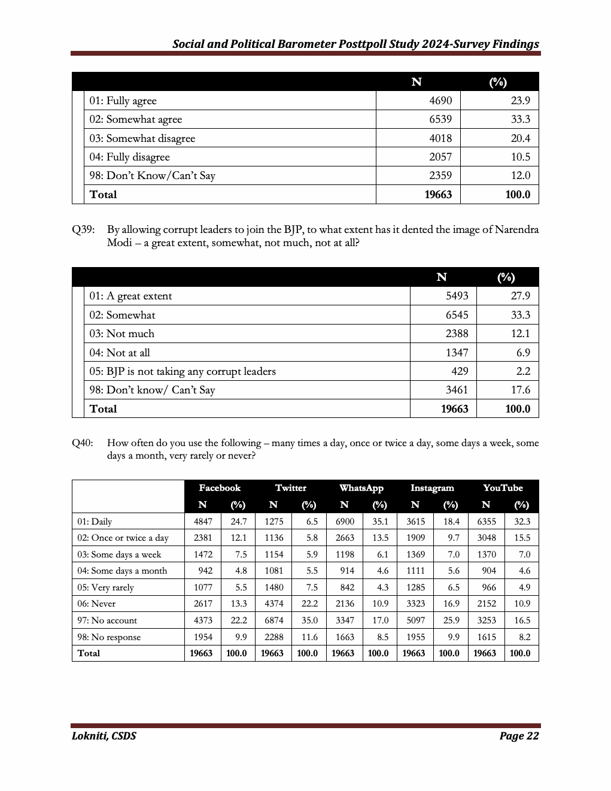
| col_0 | col_1 | col_2 | col_3 | N | col_5 | col_6 | (%) | col_8 | col_9 | Valid (%) | col_11 |
|---|---|---|---|---|---|---|---|---|---|---|---|
| Valid | NaN | 01: Increasing unemployment | NaN | 2064 | NaN | 10.5 | NaN | NaN | 27.2 | NaN | NaN |
| NaN | NaN | 02: Falling/decreasing income | NaN | 559 | NaN | 2.8 | NaN | NaN | 7.4 | NaN | NaN |
| NaN | NaN | 03: Price rise | NaN | 2310 | NaN | 11.7 | NaN | NaN | 30.4 | NaN | NaN |
| NaN | NaN | 04: Favouring big business/particular section of people | NaN | 368 | NaN | 1.9 | NaN | NaN | 4.8 | NaN | NaN |
| NaN | NaN | 05: Increasing corruption | NaN | 462 | NaN | 2.3 | NaN | NaN | 6.1 | NaN | NaN |
| NaN | NaN | 06: Poor condition of roads/transport infrastructure | NaN | 61 | NaN | 0.3 | NaN | NaN | 0.8 | NaN | NaN |
| NaN | NaN | 07: Unsatisfactory economic growth | NaN | 143 | NaN | 0.7 | NaN | NaN | 1.9 | NaN | NaN |
| NaN | NaN | 08: Poor governance | NaN | 445 | NaN | 2.3 | NaN | NaN | 5.9 | NaN | NaN |
| NaN | NaN | 09: Unsatisfactory health care infrastructure/services | NaN | 50 | NaN | 0.3 | NaN | NaN | 0.7 | NaN | NaN |
| NaN | NaN | 10: Unsatisfactory educational infrastructure | NaN | 35 | NaN | 0.2 | NaN | NaN | 0.5 | NaN | NaN |
| NaN | NaN | 11: Unsatisfactory work in the agriculture sector | NaN | 92 | NaN | 0.5 | NaN | NaN | 1.2 | NaN | NaN |
| NaN | NaN | 12: Improper treatment to farmers | NaN | 139 | NaN | 0.7 | NaN | NaN | 1.8 | NaN | NaN |
Showing 12 of 20 rows.
No candidate rows extracted for this table yet.
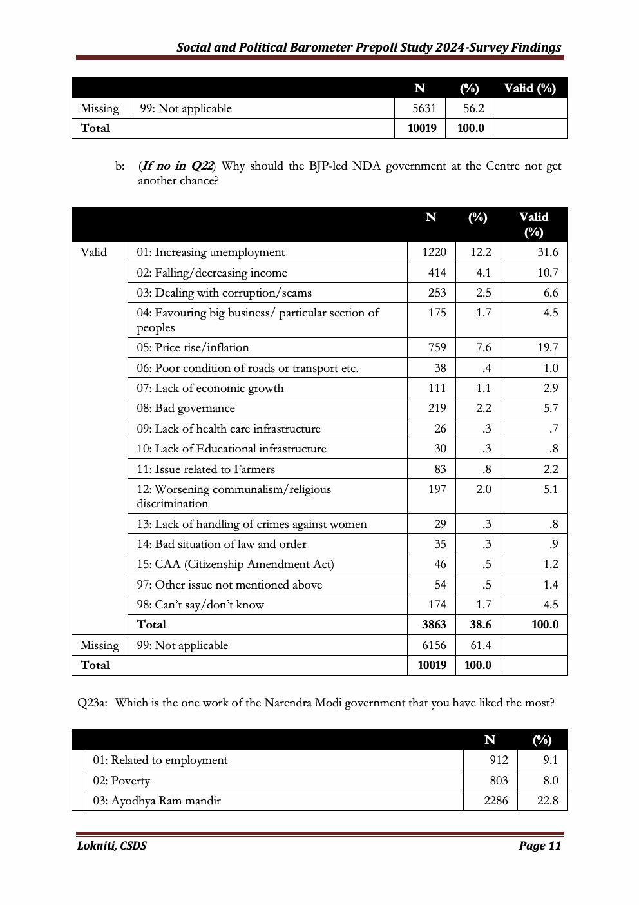
| col_0 | col_1 | col_2 | col_3 | col_4 | N | col_6 | col_7 | (%) | col_9 | col_10 | Valid | col_12 |
|---|---|---|---|---|---|---|---|---|---|---|---|---|
| NaN | NaN | NaN | NaN | NaN | NaN | NaN | NaN | NaN | NaN | NaN | (%) | NaN |
| Valid | NaN | 01: Increasing unemployment | NaN | 1220.0 | NaN | NaN | 12.2 | NaN | NaN | 31.6 | NaN | NaN |
| NaN | NaN | 02: Falling/decreasing income | NaN | 414.0 | NaN | NaN | 4.1 | NaN | NaN | 10.7 | NaN | NaN |
| NaN | NaN | 03: Dealing with corruption/scams | NaN | 253.0 | NaN | NaN | 2.5 | NaN | NaN | 6.6 | NaN | NaN |
| NaN | NaN | 04: Favouring big business/ particular section of peoples | NaN | 175.0 | NaN | NaN | 1.7 | NaN | NaN | 4.5 | NaN | NaN |
| NaN | NaN | 05: Price rise/inflation | NaN | 759.0 | NaN | NaN | 7.6 | NaN | NaN | 19.7 | NaN | NaN |
| NaN | NaN | 06: Poor condition of roads or transport etc. | NaN | 38.0 | NaN | NaN | 0.4 | NaN | NaN | 1.0 | NaN | NaN |
| NaN | NaN | 07: Lack of economic growth | NaN | 111.0 | NaN | NaN | 1.1 | NaN | NaN | 2.9 | NaN | NaN |
| NaN | NaN | 08: Bad governance | NaN | 219.0 | NaN | NaN | 2.2 | NaN | NaN | 5.7 | NaN | NaN |
| NaN | NaN | 09: Lack of health care infrastructure | NaN | 26.0 | NaN | NaN | 0.3 | NaN | NaN | 0.7 | NaN | NaN |
| NaN | NaN | 10: Lack of Educational infrastructure | NaN | 30.0 | NaN | NaN | 0.3 | NaN | NaN | 0.8 | NaN | NaN |
| NaN | NaN | 11: Issue related to Farmers | NaN | 83.0 | NaN | NaN | 0.8 | NaN | NaN | 2.2 | NaN | NaN |
Showing 12 of 21 rows.
No candidate rows extracted for this table yet.
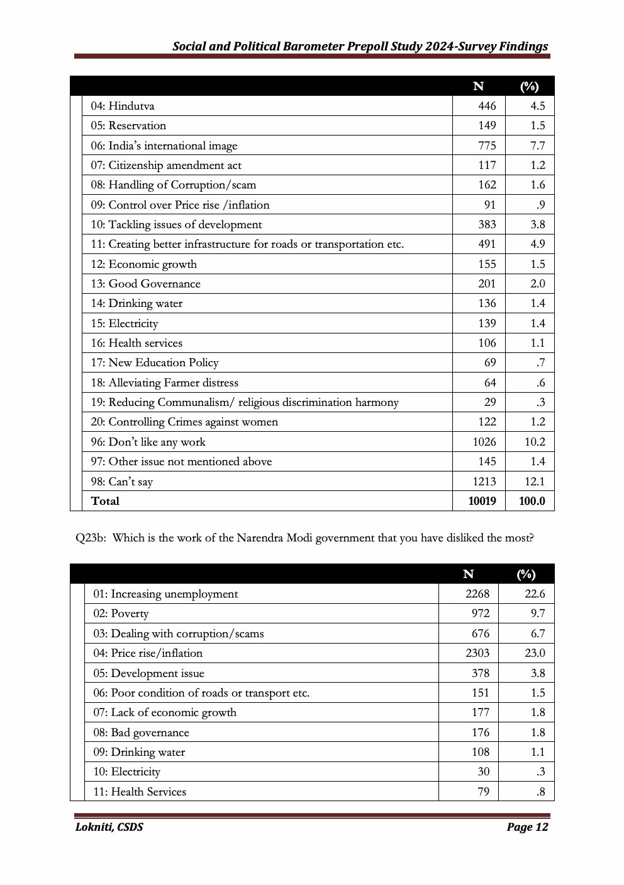
| col_0 | col_1 | col_2 | col_3 | col_4 | N | col_6 | col_7 | (%) | col_9 |
|---|---|---|---|---|---|---|---|---|---|
| NaN | NaN | 04: Hindutva | NaN | 446 | NaN | NaN | 4.5 | NaN | NaN |
| NaN | NaN | 05: Reservation | NaN | 149 | NaN | NaN | 1.5 | NaN | NaN |
| NaN | NaN | 06: India‟s international image | NaN | 775 | NaN | NaN | 7.7 | NaN | NaN |
| NaN | NaN | 07: Citizenship amendment act | NaN | 117 | NaN | NaN | 1.2 | NaN | NaN |
| NaN | NaN | 08: Handling of Corruption/scam | NaN | 162 | NaN | NaN | 1.6 | NaN | NaN |
| NaN | NaN | 09: Control over Price rise /inflation | NaN | 91 | NaN | NaN | 0.9 | NaN | NaN |
| NaN | NaN | 10: Tackling issues of development | NaN | 383 | NaN | NaN | 3.8 | NaN | NaN |
| NaN | NaN | 11: Creating better infrastructure for roads or transportation etc. | NaN | 491 | NaN | NaN | 4.9 | NaN | NaN |
| NaN | NaN | 12: Economic growth | NaN | 155 | NaN | NaN | 1.5 | NaN | NaN |
| NaN | NaN | 13: Good Governance | NaN | 201 | NaN | NaN | 2.0 | NaN | NaN |
| NaN | NaN | 14: Drinking water | NaN | 136 | NaN | NaN | 1.4 | NaN | NaN |
| NaN | NaN | 15: Electricity | NaN | 139 | NaN | NaN | 1.4 | NaN | NaN |
Showing 12 of 21 rows.
No candidate rows extracted for this table yet.
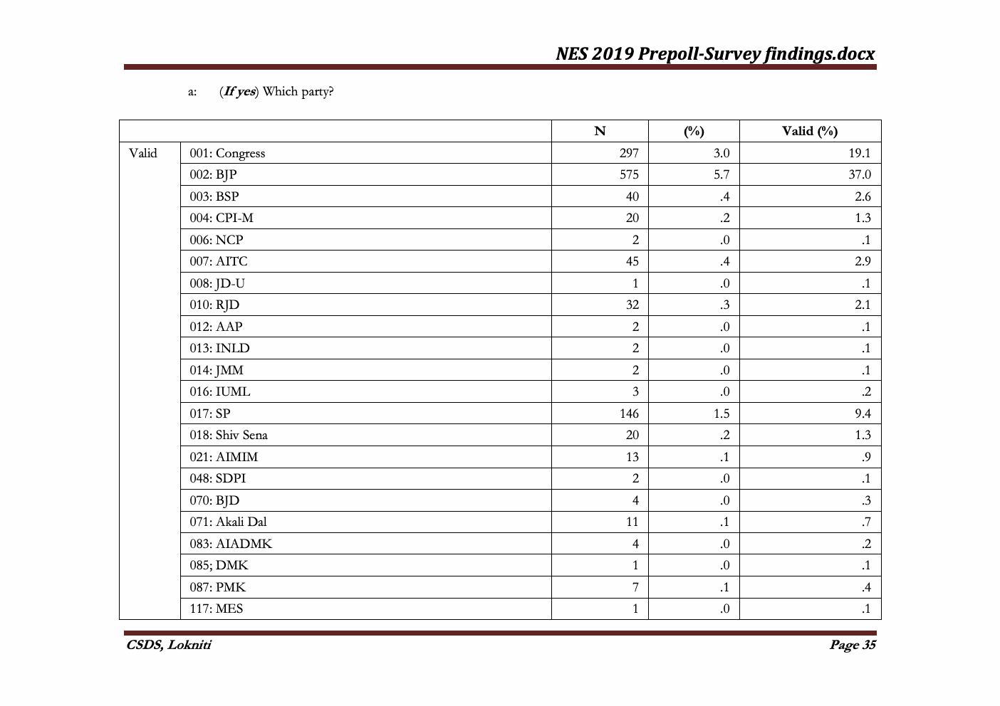
| col_0 | col_1 | N | (%) | Valid (%) |
|---|---|---|---|---|
| Valid | 001: Congress | 297 | 3.0 | 19.1 |
| NaN | 002: BJP | 575 | 5.7 | 37.0 |
| NaN | 003: BSP | 40 | 0.4 | 2.6 |
| NaN | 004: CPI-M | 20 | 0.2 | 1.3 |
| NaN | 006: NCP | 2 | 0.0 | 0.1 |
| NaN | 007: AITC | 45 | 0.4 | 2.9 |
| NaN | 008: JD-U | 1 | 0.0 | 0.1 |
| NaN | 010: RJD | 32 | 0.3 | 2.1 |
| NaN | 012: AAP | 2 | 0.0 | 0.1 |
| NaN | 013: INLD | 2 | 0.0 | 0.1 |
| NaN | 014: JMM | 2 | 0.0 | 0.1 |
| NaN | 016: IUML | 3 | 0.0 | 0.2 |
Showing 12 of 22 rows.
No candidate rows extracted for this table yet.
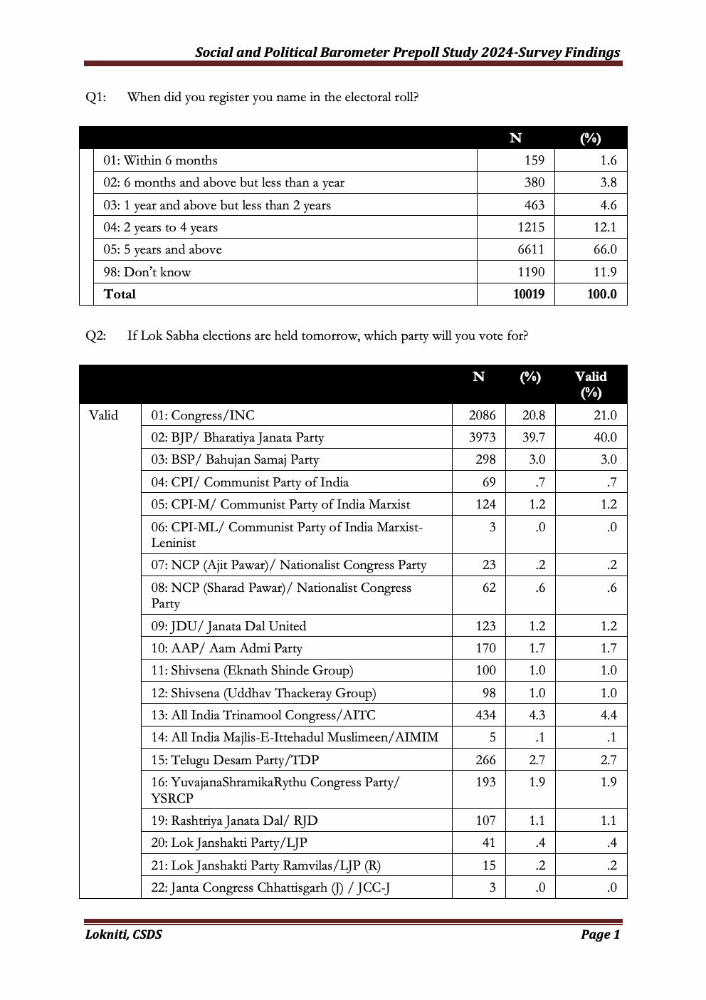
| col_0 | col_1 | col_2 | col_3 | col_4 | N | col_6 | col_7 | (%) | col_9 | col_10 | Valid | col_12 |
|---|---|---|---|---|---|---|---|---|---|---|---|---|
| NaN | NaN | NaN | NaN | NaN | NaN | NaN | NaN | NaN | NaN | NaN | (%) | NaN |
| Valid | NaN | 01: Congress/INC | NaN | 2086.0 | NaN | NaN | 20.8 | NaN | NaN | 21.0 | NaN | NaN |
| NaN | NaN | 02: BJP/ Bharatiya Janata Party | NaN | 3973.0 | NaN | NaN | 39.7 | NaN | NaN | 40.0 | NaN | NaN |
| NaN | NaN | 03: BSP/ Bahujan Samaj Party | NaN | 298.0 | NaN | NaN | 3.0 | NaN | NaN | 3.0 | NaN | NaN |
| NaN | NaN | 04: CPI/ Communist Party of India | NaN | 69.0 | NaN | NaN | 0.7 | NaN | NaN | 0.7 | NaN | NaN |
| NaN | NaN | 05: CPI-M/ Communist Party of India Marxist | NaN | 124.0 | NaN | NaN | 1.2 | NaN | NaN | 1.2 | NaN | NaN |
| NaN | NaN | 06: CPI-ML/ Communist Party of India Marxist- Leninist | NaN | 3.0 | NaN | NaN | 0.0 | NaN | NaN | 0.0 | NaN | NaN |
| NaN | NaN | 07: NCP (Ajit Pawar)/ Nationalist Congress Party | NaN | 23.0 | NaN | NaN | 0.2 | NaN | NaN | 0.2 | NaN | NaN |
| NaN | NaN | 08: NCP (Sharad Pawar)/ Nationalist Congress Party | NaN | 62.0 | NaN | NaN | 0.6 | NaN | NaN | 0.6 | NaN | NaN |
| NaN | NaN | 09: JDU/ Janata Dal United | NaN | 123.0 | NaN | NaN | 1.2 | NaN | NaN | 1.2 | NaN | NaN |
| NaN | NaN | 10: AAP/ Aam Admi Party | NaN | 170.0 | NaN | NaN | 1.7 | NaN | NaN | 1.7 | NaN | NaN |
| NaN | NaN | 11: Shivsena (Eknath Shinde Group) | NaN | 100.0 | NaN | NaN | 1.0 | NaN | NaN | 1.0 | NaN | NaN |
Showing 12 of 21 rows.
| party_or_alliance | voter_group_type | voter_group | vote_share | extraction_confidence | raw_row_label | raw_column_label | raw_cell_value |
|---|---|---|---|---|---|---|---|
| INC | electorate | all voters | 70.0 | medium | 04: N Kiran Kumar Reddy (Cong) | (%) | 0.7 |
| Others | electorate | all voters | 100.0 | high | 98: No response | (%) | 1.0 |
| INC | electorate | all voters | 23.0 | medium | 001: INC | (%) | 23.0 |
| BJP | electorate | all voters | 10.7 | high | 002: BJP | (%) | 10.7 |
| BSP | electorate | all voters | 10.0 | high | 003: BSP | (%) | 0.1 |
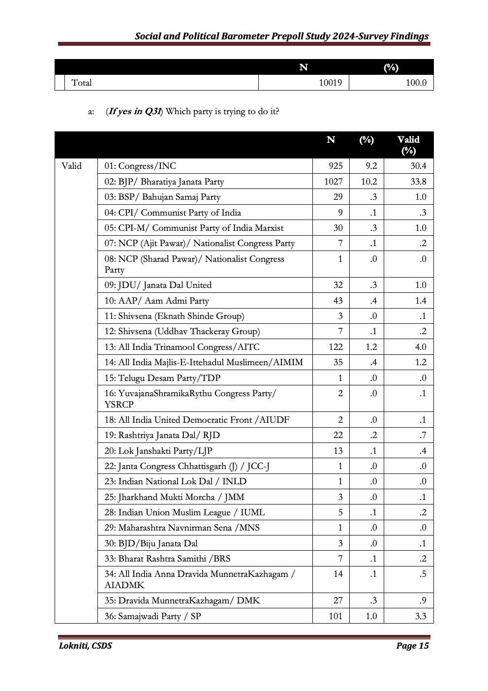
| col_0 | col_1 | col_2 | col_3 | col_4 | N | col_6 | col_7 | (%) | col_9 | col_10 | Valid | col_12 |
|---|---|---|---|---|---|---|---|---|---|---|---|---|
| NaN | NaN | NaN | NaN | NaN | NaN | NaN | NaN | NaN | NaN | NaN | (%) | NaN |
| Valid | NaN | 01: Congress/INC | NaN | 925.0 | NaN | NaN | 9.2 | NaN | NaN | 30.4 | NaN | NaN |
| NaN | NaN | 02: BJP/ Bharatiya Janata Party | NaN | 1027.0 | NaN | NaN | 10.2 | NaN | NaN | 33.8 | NaN | NaN |
| NaN | NaN | 03: BSP/ Bahujan Samaj Party | NaN | 29.0 | NaN | NaN | 0.3 | NaN | NaN | 1.0 | NaN | NaN |
| NaN | NaN | 04: CPI/ Communist Party of India | NaN | 9.0 | NaN | NaN | 0.1 | NaN | NaN | 0.3 | NaN | NaN |
| NaN | NaN | 05: CPI-M/ Communist Party of India Marxist | NaN | 30.0 | NaN | NaN | 0.3 | NaN | NaN | 1.0 | NaN | NaN |
| NaN | NaN | 07: NCP (Ajit Pawar)/ Nationalist Congress Party | NaN | 7.0 | NaN | NaN | 0.1 | NaN | NaN | 0.2 | NaN | NaN |
| NaN | NaN | 08: NCP (Sharad Pawar)/ Nationalist Congress Party | NaN | 1.0 | NaN | NaN | 0.0 | NaN | NaN | 0.0 | NaN | NaN |
| NaN | NaN | 09: JDU/ Janata Dal United | NaN | 32.0 | NaN | NaN | 0.3 | NaN | NaN | 1.0 | NaN | NaN |
| NaN | NaN | 10: AAP/ Aam Admi Party | NaN | 43.0 | NaN | NaN | 0.4 | NaN | NaN | 1.4 | NaN | NaN |
| NaN | NaN | 11: Shivsena (Eknath Shinde Group) | NaN | 3.0 | NaN | NaN | 0.0 | NaN | NaN | 0.1 | NaN | NaN |
| NaN | NaN | 12: Shivsena (Uddhav Thackeray Group) | NaN | 7.0 | NaN | NaN | 0.1 | NaN | NaN | 0.2 | NaN | NaN |
Showing 12 of 29 rows.
No candidate rows extracted for this table yet.
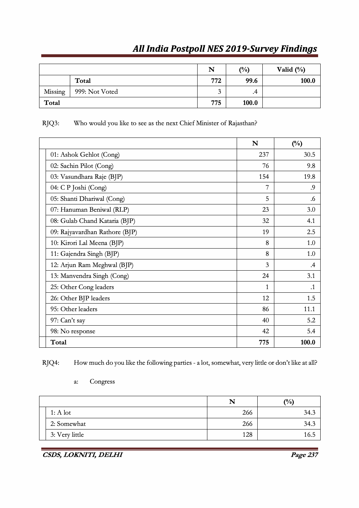
| col_0 | col_1 | N | (%) |
|---|---|---|---|
| NaN | 001: INC | 24 | 1.4 |
| NaN | 002: BJP | 31 | 1.8 |
| NaN | 003: BSP | 21 | 1.2 |
| NaN | 004: CPI(M) | 7 | 0.4 |
| NaN | 005: CPI | 1 | 0.1 |
| NaN | 008: JD-U | 6 | 0.4 |
| NaN | 009: LJP | 1 | 0.1 |
| NaN | 012: AAP | 3 | 0.2 |
| NaN | 078: BVP | 5 | 0.3 |
| NaN | 083: AIADMK | 282 | 16.3 |
| NaN | 084: AMMK | 119 | 6.9 |
| NaN | 085: DMK | 753 | 43.5 |
Showing 12 of 23 rows.
No candidate rows extracted for this table yet.
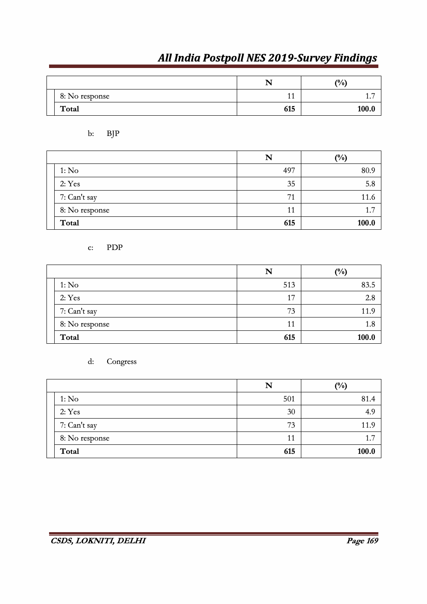
| col_0 | col_1 | N | (%) |
|---|---|---|---|
| NaN | 001: INC | 199 | 12.0 |
| NaN | 002: BJP | 139 | 8.3 |
| NaN | 003: BSP | 12 | 0.7 |
| NaN | 004: CPI(M) | 226 | 13.6 |
| NaN | 005: CPI | 3 | 0.2 |
| NaN | 006: NCP | 1 | 0.1 |
| NaN | 007: AITC | 2 | 0.1 |
| NaN | 008: JD-U | 2 | 0.1 |
| NaN | 011: CPI(ML)(L) | 4 | 0.3 |
| NaN | 012: AAP | 1 | 0.0 |
| NaN | 016: IUML | 3 | 0.2 |
| NaN | 020: RSP | 1 | 0.0 |
Showing 12 of 27 rows.
No candidate rows extracted for this table yet.
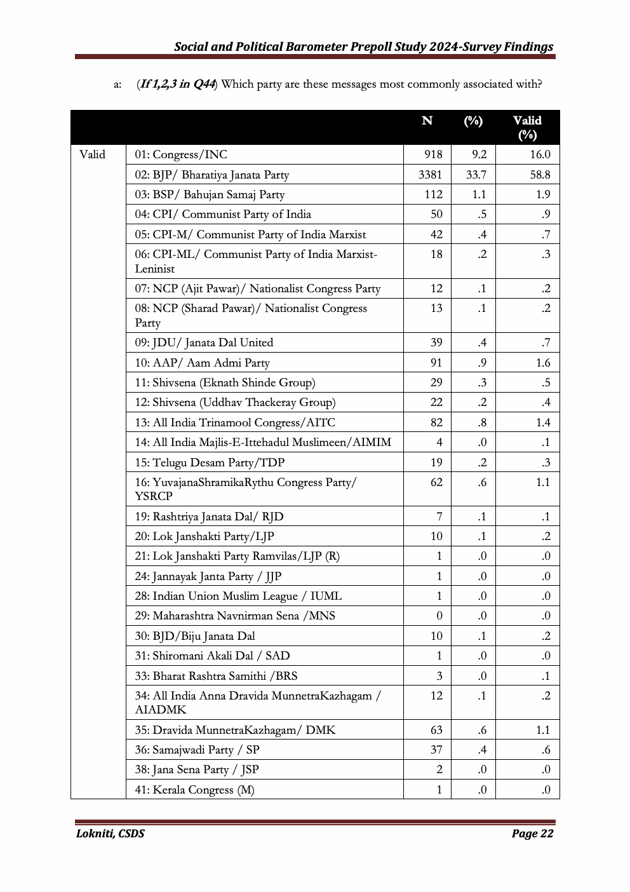
| col_0 | col_1 | col_2 | col_3 | col_4 | N | col_6 | col_7 | (%) | col_9 | col_10 | Valid | col_12 |
|---|---|---|---|---|---|---|---|---|---|---|---|---|
| NaN | NaN | NaN | NaN | NaN | NaN | NaN | NaN | NaN | NaN | NaN | (%) | NaN |
| Valid | NaN | 01: Congress/INC | NaN | 918.0 | NaN | NaN | 9.2 | NaN | NaN | 16.0 | NaN | NaN |
| NaN | NaN | 02: BJP/ Bharatiya Janata Party | NaN | 3381.0 | NaN | NaN | 33.7 | NaN | NaN | 58.8 | NaN | NaN |
| NaN | NaN | 03: BSP/ Bahujan Samaj Party | NaN | 112.0 | NaN | NaN | 1.1 | NaN | NaN | 1.9 | NaN | NaN |
| NaN | NaN | 04: CPI/ Communist Party of India | NaN | 50.0 | NaN | NaN | 0.5 | NaN | NaN | 0.9 | NaN | NaN |
| NaN | NaN | 05: CPI-M/ Communist Party of India Marxist | NaN | 42.0 | NaN | NaN | 0.4 | NaN | NaN | 0.7 | NaN | NaN |
| NaN | NaN | 06: CPI-ML/ Communist Party of India Marxist- Leninist | NaN | 18.0 | NaN | NaN | 0.2 | NaN | NaN | 0.3 | NaN | NaN |
| NaN | NaN | 07: NCP (Ajit Pawar)/ Nationalist Congress Party | NaN | 12.0 | NaN | NaN | 0.1 | NaN | NaN | 0.2 | NaN | NaN |
| NaN | NaN | 08: NCP (Sharad Pawar)/ Nationalist Congress Party | NaN | 13.0 | NaN | NaN | 0.1 | NaN | NaN | 0.2 | NaN | NaN |
| NaN | NaN | 09: JDU/ Janata Dal United | NaN | 39.0 | NaN | NaN | 0.4 | NaN | NaN | 0.7 | NaN | NaN |
| NaN | NaN | 10: AAP/ Aam Admi Party | NaN | 91.0 | NaN | NaN | 0.9 | NaN | NaN | 1.6 | NaN | NaN |
| NaN | NaN | 11: Shivsena (Eknath Shinde Group) | NaN | 29.0 | NaN | NaN | 0.3 | NaN | NaN | 0.5 | NaN | NaN |
Showing 12 of 31 rows.
No candidate rows extracted for this table yet.
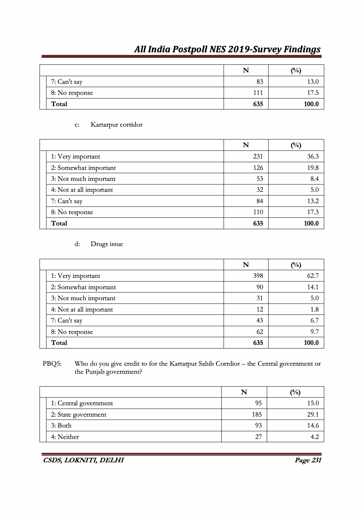
| col_0 | col_1 | N | (%) | Valid (%) |
|---|---|---|---|---|
| Valid | 001: INC | 356 | 45.9 | 46.1 |
| NaN | 002: BJP | 344 | 44.4 | 44.6 |
| NaN | 003: BSP | 6 | 0.8 | 0.8 |
| NaN | 007: AITC | 2 | 0.3 | 0.3 |
| NaN | 008: JD-U | 2 | 0.3 | 0.3 |
| NaN | 021: AIMIM | 1 | 0.1 | 0.1 |
| NaN | 026: AGP | 1 | 0.1 | 0.1 |
| NaN | 036: BTP | 11 | 1.5 | 1.5 |
| NaN | 077: RLP | 1 | 0.1 | 0.1 |
| NaN | 900: Independent | 1 | 0.1 | 0.1 |
| NaN | 996: Can't say | 16 | 2.1 | 2.1 |
| NaN | 997: Any other party | 14 | 1.8 | 1.8 |
Showing 12 of 13 rows.
No candidate rows extracted for this table yet.
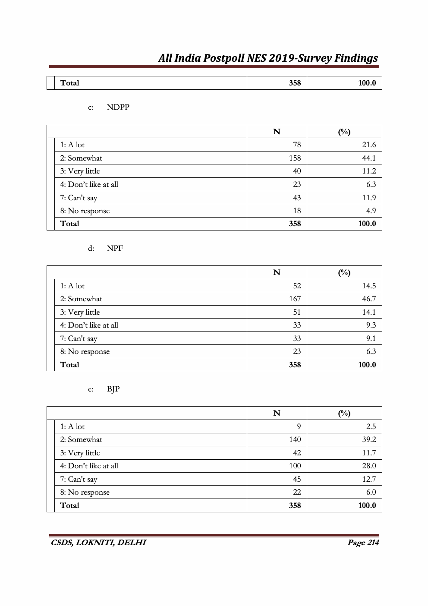
| col_0 | col_1 | N | (%) |
|---|---|---|---|
| NaN | 001: INC | 89 | 9.9 |
| NaN | 002: BJP | 165 | 18.4 |
| NaN | 003: BSP | 1 | 0.1 |
| NaN | 004: CPI(M) | 16 | 1.8 |
| NaN | 005: CPI | 9 | 1.0 |
| NaN | 007: AITC | 1 | 0.1 |
| NaN | 070: BJD | 582 | 64.7 |
| NaN | 902: NOTA | 1 | 0.1 |
| NaN | 995: Did not vote | 17 | 1.9 |
| NaN | 996: Can't say | 9 | 0.9 |
| NaN | 998: No response | 9 | 1.0 |
| NaN | Total | 900 | 100.0 |
No candidate rows extracted for this table yet.
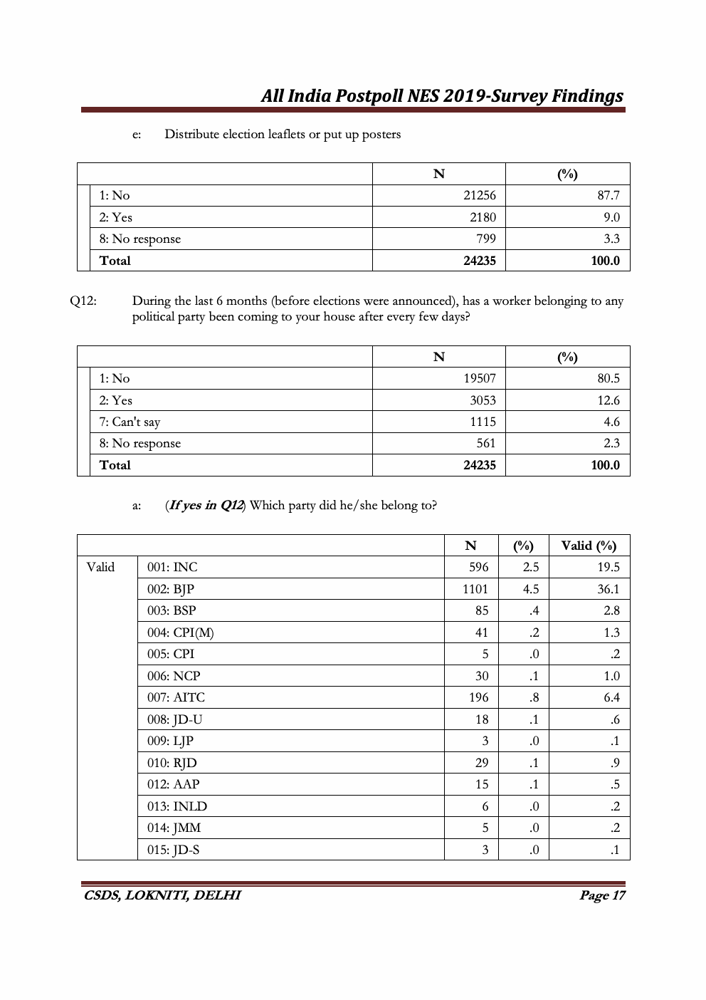
| col_0 | col_1 | N | (%) | Valid (%) |
|---|---|---|---|---|
| Valid | 001: INC | 596 | 2.5 | 19.5 |
| NaN | 002: BJP | 1101 | 4.5 | 36.1 |
| NaN | 003: BSP | 85 | 0.4 | 2.8 |
| NaN | 004: CPI(M) | 41 | 0.2 | 1.3 |
| NaN | 005: CPI | 5 | 0.0 | 0.2 |
| NaN | 006: NCP | 30 | 0.1 | 1.0 |
| NaN | 007: AITC | 196 | 0.8 | 6.4 |
| NaN | 008: JD-U | 18 | 0.1 | 0.6 |
| NaN | 009: LJP | 3 | 0.0 | 0.1 |
| NaN | 010: RJD | 29 | 0.1 | 0.9 |
| NaN | 012: AAP | 15 | 0.1 | 0.5 |
| NaN | 013: INLD | 6 | 0.0 | 0.2 |
Showing 12 of 14 rows.
No candidate rows extracted for this table yet.
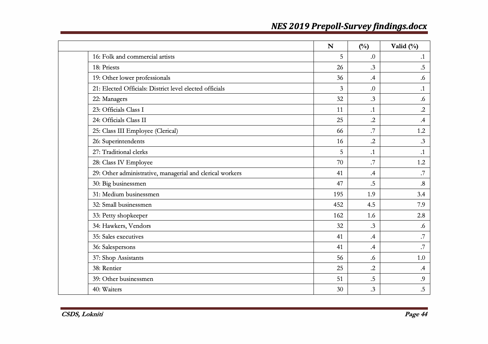
| col_0 | col_1 | N | (%) | Valid (%) |
|---|---|---|---|---|
| NaN | 16: Folk and commercial artists | 5 | 0.0 | 0.1 |
| NaN | 18: Priests | 26 | 0.3 | 0.5 |
| NaN | 19: Other lower professionals | 36 | 0.4 | 0.6 |
| NaN | 21: Elected Officials: District level elected officials | 3 | 0.0 | 0.1 |
| NaN | 22: Managers | 32 | 0.3 | 0.6 |
| NaN | 23: Officials Class I | 11 | 0.1 | 0.2 |
| NaN | 24: Officials Class II | 25 | 0.2 | 0.4 |
| NaN | 25: Class III Employee (Clerical) | 66 | 0.7 | 1.2 |
| NaN | 26: Superintendents | 16 | 0.2 | 0.3 |
| NaN | 27: Traditional clerks | 5 | 0.1 | 0.1 |
| NaN | 28: Class IV Employee | 70 | 0.7 | 1.2 |
| NaN | 29: Other administrative, managerial and clerical workers | 41 | 0.4 | 0.7 |
Showing 12 of 23 rows.
No candidate rows extracted for this table yet.
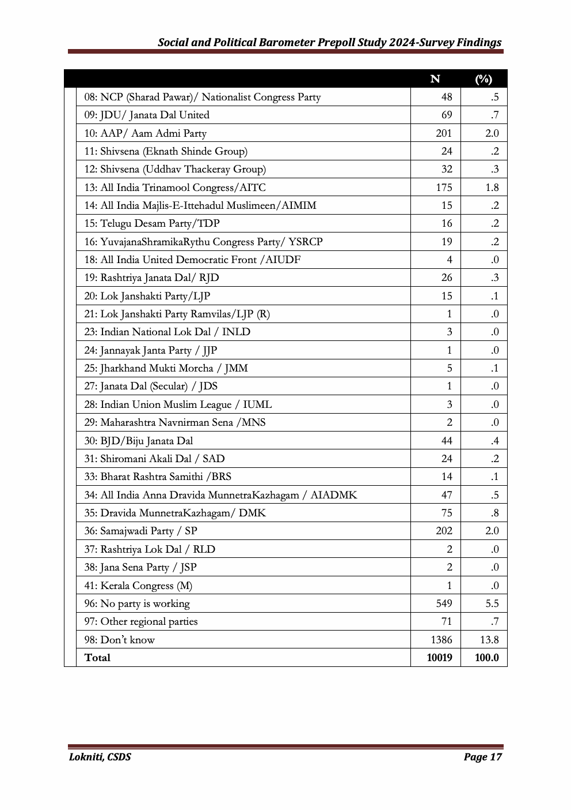
| col_0 | col_1 | col_2 | col_3 | col_4 | N | col_6 | col_7 | (%) | col_9 |
|---|---|---|---|---|---|---|---|---|---|
| NaN | NaN | 08: NCP (Sharad Pawar)/ Nationalist Congress Party | NaN | 48 | NaN | NaN | 0.5 | NaN | NaN |
| NaN | NaN | 09: JDU/ Janata Dal United | NaN | 69 | NaN | NaN | 0.7 | NaN | NaN |
| NaN | NaN | 10: AAP/ Aam Admi Party | NaN | 201 | NaN | NaN | 2.0 | NaN | NaN |
| NaN | NaN | 11: Shivsena (Eknath Shinde Group) | NaN | 24 | NaN | NaN | 0.2 | NaN | NaN |
| NaN | NaN | 12: Shivsena (Uddhav Thackeray Group) | NaN | 32 | NaN | NaN | 0.3 | NaN | NaN |
| NaN | NaN | 13: All India Trinamool Congress/AITC | NaN | 175 | NaN | NaN | 1.8 | NaN | NaN |
| NaN | NaN | 14: All India Majlis-E-Ittehadul Muslimeen/AIMIM | NaN | 15 | NaN | NaN | 0.2 | NaN | NaN |
| NaN | NaN | 15: Telugu Desam Party/TDP | NaN | 16 | NaN | NaN | 0.2 | NaN | NaN |
| NaN | NaN | 16: YuvajanaShramikaRythu Congress Party/ YSRCP | NaN | 19 | NaN | NaN | 0.2 | NaN | NaN |
| NaN | NaN | 18: All India United Democratic Front /AIUDF | NaN | 4 | NaN | NaN | 0.0 | NaN | NaN |
| NaN | NaN | 19: Rashtriya Janata Dal/ RJD | NaN | 26 | NaN | NaN | 0.3 | NaN | NaN |
| NaN | NaN | 20: Lok Janshakti Party/LJP | NaN | 15 | NaN | NaN | 0.1 | NaN | NaN |
Showing 12 of 32 rows.
No candidate rows extracted for this table yet.
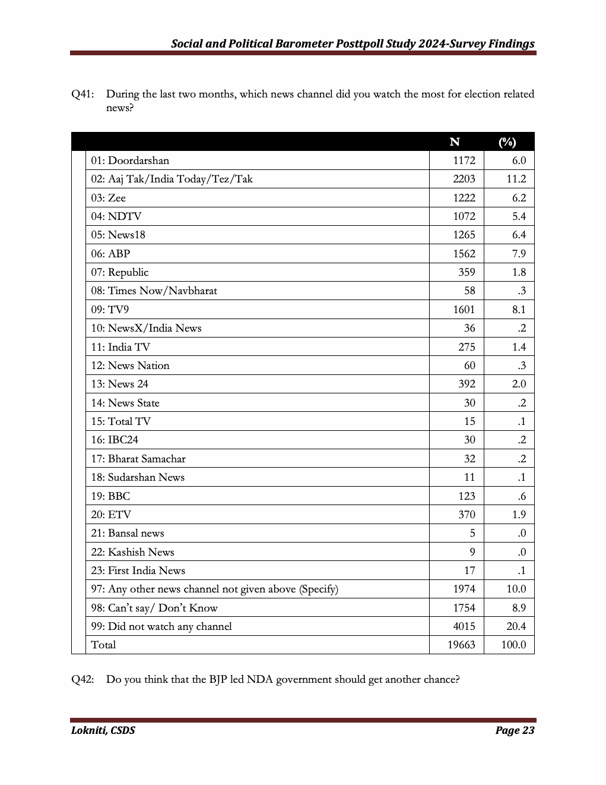
| col_0 | col_1 | N | (%) | col_4 | Valid | col_6 |
|---|---|---|---|---|---|---|
| NaN | NaN | NaN | NaN | NaN | (%) | NaN |
| NaN | 02: Good policies and welfare schemes | 1019.0 | 5.2 | 11.2 | NaN | NaN |
| NaN | 03: Better for strengthening Indian civilisation | 303.0 | 1.5 | 3.3 | NaN | NaN |
| NaN | 04: For protecting religious interests/Construction of Ram temple | 475.0 | 2.4 | 5.2 | NaN | NaN |
| NaN | 05: Maintaining law and order/national security | 283.0 | 1.4 | 3.1 | NaN | NaN |
| NaN | 06: Upliftment of poor, SCs, STs and OBCs | 251.0 | 1.3 | 2.7 | NaN | NaN |
| NaN | 07: For the development of the country | 1926.0 | 9.8 | 21.1 | NaN | NaN |
| NaN | 08: Due to leadership of Narendra Modi | 1774.0 | 9.0 | 19.5 | NaN | NaN |
| NaN | 09: For further economic growth | 604.0 | 3.1 | 6.6 | NaN | NaN |
| NaN | 10: Better than the available options | 474.0 | 2.4 | 5.2 | NaN | NaN |
| NaN | 11:Removing Article 370 | 118.0 | 0.6 | 1.3 | NaN | NaN |
| NaN | 12: India’s international image | 99.0 | 0.5 | 1.1 | NaN | NaN |
Showing 12 of 18 rows.
No candidate rows extracted for this table yet.
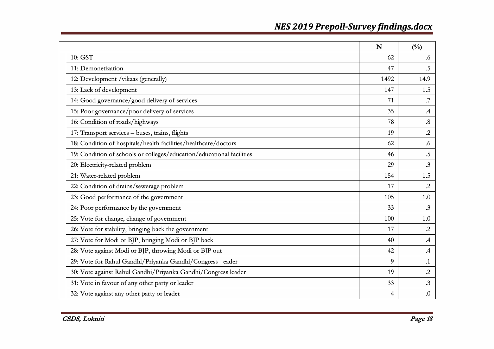
| col_0 | col_1 | N | (%) |
|---|---|---|---|
| NaN | 10: GST | 62 | 0.6 |
| NaN | 11: Demonetization | 47 | 0.5 |
| NaN | 12: Development /vikaas (generally) | 1492 | 14.9 |
| NaN | 13: Lack of development | 147 | 1.5 |
| NaN | 14: Good governance/good delivery of services | 71 | 0.7 |
| NaN | 15: Poor governance/poor delivery of services | 35 | 0.4 |
| NaN | 16: Condition of roads/highways | 78 | 0.8 |
| NaN | 17: Transport services – buses, trains, flights | 19 | 0.2 |
| NaN | 18: Condition of hospitals/health facilities/healthcare/doctors | 62 | 0.6 |
| NaN | 19: Condition of schools or colleges/education/educational facilities | 46 | 0.5 |
| NaN | 20: Electricity-related problem | 29 | 0.3 |
| NaN | 21: Water-related problem | 154 | 1.5 |
Showing 12 of 23 rows.
No candidate rows extracted for this table yet.
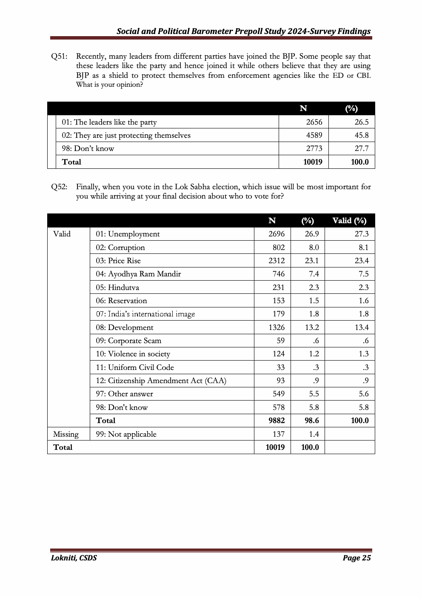
| col_0 | col_1 | col_2 | col_3 | col_4 | N | col_6 | col_7 | (%) | col_9 | col_10 | Valid (%) | col_12 |
|---|---|---|---|---|---|---|---|---|---|---|---|---|
| Valid | NaN | 01: Unemployment | NaN | 2696 | NaN | NaN | 26.9 | NaN | NaN | 27.3 | NaN | NaN |
| NaN | NaN | 02: Corruption | NaN | 802 | NaN | NaN | 8.0 | NaN | NaN | 8.1 | NaN | NaN |
| NaN | NaN | 03: Price Rise | NaN | 2312 | NaN | NaN | 23.1 | NaN | NaN | 23.4 | NaN | NaN |
| NaN | NaN | 04: Ayodhya Ram Mandir | NaN | 746 | NaN | NaN | 7.4 | NaN | NaN | 7.5 | NaN | NaN |
| NaN | NaN | 05: Hindutva | NaN | 231 | NaN | NaN | 2.3 | NaN | NaN | 2.3 | NaN | NaN |
| NaN | NaN | 06: Reservation | NaN | 153 | NaN | NaN | 1.5 | NaN | NaN | 1.6 | NaN | NaN |
| NaN | NaN | 07: India‟s international image | NaN | 179 | NaN | NaN | 1.8 | NaN | NaN | 1.8 | NaN | NaN |
| NaN | NaN | 08: Development | NaN | 1326 | NaN | NaN | 13.2 | NaN | NaN | 13.4 | NaN | NaN |
| NaN | NaN | 09: Corporate Scam | NaN | 59 | NaN | NaN | 0.6 | NaN | NaN | 0.6 | NaN | NaN |
| NaN | NaN | 10: Violence in society | NaN | 124 | NaN | NaN | 1.2 | NaN | NaN | 1.3 | NaN | NaN |
| NaN | NaN | 11: Uniform Civil Code | NaN | 33 | NaN | NaN | 0.3 | NaN | NaN | 0.3 | NaN | NaN |
| NaN | NaN | 12: Citizenship Amendment Act (CAA) | NaN | 93 | NaN | NaN | 0.9 | NaN | NaN | 0.9 | NaN | NaN |
Showing 12 of 17 rows.
No candidate rows extracted for this table yet.
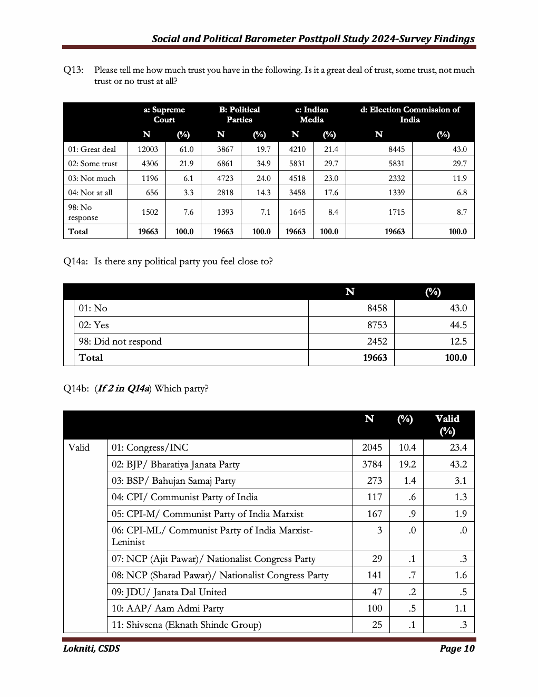
| col_0 | col_1 | col_2 | N | (%) | col_5 | Valid | col_7 |
|---|---|---|---|---|---|---|---|
| NaN | NaN | NaN | NaN | NaN | NaN | (%) | NaN |
| Valid | NaN | 01: Congress/INC | 2045.0 | 10.4 | 23.4 | NaN | NaN |
| NaN | NaN | 02: BJP/ Bharatiya Janata Party | 3784.0 | 19.2 | 43.2 | NaN | NaN |
| NaN | NaN | 03: BSP/ Bahujan Samaj Party | 273.0 | 1.4 | 3.1 | NaN | NaN |
| NaN | NaN | 04: CPI/ Communist Party of India | 117.0 | 0.6 | 1.3 | NaN | NaN |
| NaN | NaN | 05: CPI-M/ Communist Party of India Marxist | 167.0 | 0.9 | 1.9 | NaN | NaN |
| NaN | NaN | 06: CPI-ML/ Communist Party of India Marxist- Leninist | 3.0 | 0.0 | 0.0 | NaN | NaN |
| NaN | NaN | 07: NCP (Ajit Pawar)/ Nationalist Congress Party | 29.0 | 0.1 | 0.3 | NaN | NaN |
| NaN | NaN | 08: NCP (Sharad Pawar)/ Nationalist Congress Party | 141.0 | 0.7 | 1.6 | NaN | NaN |
| NaN | NaN | 09: JDU/ Janata Dal United | 47.0 | 0.2 | 0.5 | NaN | NaN |
| NaN | NaN | 10: AAP/ Aam Admi Party | 100.0 | 0.5 | 1.1 | NaN | NaN |
| NaN | NaN | 11: Shivsena (Eknath Shinde Group) | 25.0 | 0.1 | 0.3 | NaN | NaN |
No candidate rows extracted for this table yet.
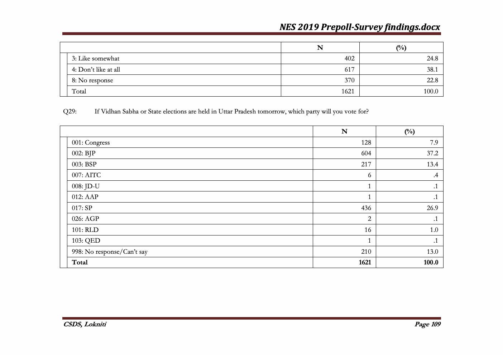
| col_0 | col_1 | N | (%) |
|---|---|---|---|
| NaN | 001: Congress | 128 | 7.9 |
| NaN | 002: BJP | 604 | 37.2 |
| NaN | 003: BSP | 217 | 13.4 |
| NaN | 007: AITC | 6 | 0.4 |
| NaN | 008: JD-U | 1 | 0.1 |
| NaN | 012: AAP | 1 | 0.1 |
| NaN | 017: SP | 436 | 26.9 |
| NaN | 026: AGP | 2 | 0.1 |
| NaN | 101: RLD | 16 | 1.0 |
| NaN | 103: QED | 1 | 0.1 |
| NaN | 998: No response/Can’t say | 210 | 13.0 |
| NaN | Total | 1621 | 100.0 |
| party_or_alliance | voter_group_type | voter_group | vote_share | extraction_confidence | raw_row_label | raw_column_label | raw_cell_value |
|---|---|---|---|---|---|---|---|
| INC | electorate | all voters | 7.9 | medium | 001: Congress | (%) | 7.9 |
| BJP | electorate | all voters | 37.2 | high | 002: BJP | (%) | 37.2 |
| BSP | electorate | all voters | 13.4 | high | 003: BSP | (%) | 13.4 |
| TMC | electorate | all voters | 40.0 | high | 007: AITC | (%) | 0.4 |
| AAP | electorate | all voters | 10.0 | high | 012: AAP | (%) | 0.1 |
| SP | electorate | all voters | 26.9 | high | 017: SP | (%) | 26.9 |
| Others | electorate | all voters | 13.0 | high | 998: No response/Can’t say | (%) | 13.0 |
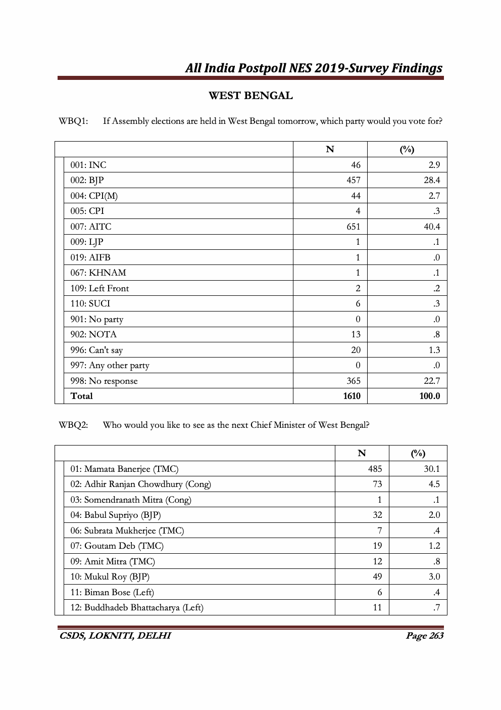
| col_0 | col_1 | N | (%) |
|---|---|---|---|
| NaN | 01: Arvind Kejriwal (AAP) | 240 | 35.1 |
| NaN | 02: Vijender Gupta (BJP) | 14 | 2.0 |
| NaN | 03: Sheila Dikshit (Cong) | 35 | 5.2 |
| NaN | 04: Manish Sisodia (AAP) | 5 | 0.8 |
| NaN | 05: Harsh Vardhan (BJP) | 24 | 3.5 |
| NaN | 06: Manoj Tiwari (BJP) | 13 | 2.0 |
| NaN | 07: Ajay Maken (Cong) | 2 | 0.2 |
| NaN | 08: Vijay Goel (BJP) | 1 | 0.1 |
| NaN | 09: Arvinder Singh Lovely (Cong) | 3 | 0.4 |
| NaN | 25: Other Cong leaders | 29 | 4.3 |
| NaN | 26: Other BJP leaders | 47 | 6.8 |
| NaN | 27: Other AAP leaders | 1 | 0.2 |
Showing 12 of 16 rows.
| party_or_alliance | voter_group_type | voter_group | vote_share | extraction_confidence | raw_row_label | raw_column_label | raw_cell_value |
|---|---|---|---|---|---|---|---|
| AAP | electorate | all voters | 35.1 | medium | 01: Arvind Kejriwal (AAP) | (%) | 35.1 |
| BJP | electorate | all voters | 2.0 | high | 02: Vijender Gupta (BJP) | (%) | 2.0 |
| INC | electorate | all voters | 5.2 | high | 03: Sheila Dikshit (Cong) | (%) | 5.2 |
| AAP | electorate | all voters | 80.0 | high | 04: Manish Sisodia (AAP) | (%) | 0.8 |
| BJP | electorate | all voters | 3.5 | high | 05: Harsh Vardhan (BJP) | (%) | 3.5 |
| BJP | electorate | all voters | 2.0 | high | 06: Manoj Tiwari (BJP) | (%) | 2.0 |
| INC | electorate | all voters | 20.0 | high | 07: Ajay Maken (Cong) | (%) | 0.2 |
| BJP | electorate | all voters | 10.0 | high | 08: Vijay Goel (BJP) | (%) | 0.1 |
| INC | electorate | all voters | 40.0 | high | 09: Arvinder Singh Lovely (Cong) | (%) | 0.4 |
| Others | electorate | all voters | 4.3 | high | 25: Other Cong leaders | (%) | 4.3 |
| Others | electorate | all voters | 6.8 | high | 26: Other BJP leaders | (%) | 6.8 |
| Others | electorate | all voters | 20.0 | high | 27: Other AAP leaders | (%) | 0.2 |
| Others | electorate | all voters | 1.4 | high | 95: Other leaders | (%) | 1.4 |
| Others | electorate | all voters | 8.7 | high | 98: No response | (%) | 8.7 |
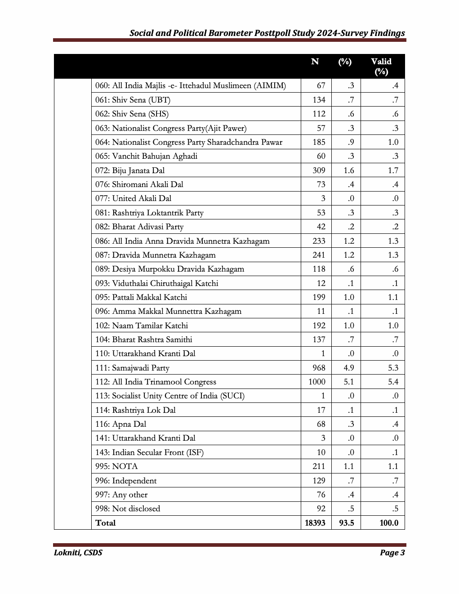
| col_0 | col_1 | N | (%) | col_4 | Valid | col_6 |
|---|---|---|---|---|---|---|
| NaN | NaN | NaN | NaN | NaN | (%) | NaN |
| NaN | 060: All India Majlis -e- Ittehadul Muslimeen (AIMIM) | 67.0 | 0.3 | 0.4 | NaN | NaN |
| NaN | 061: Shiv Sena (UBT) | 134.0 | 0.7 | 0.7 | NaN | NaN |
| NaN | 062: Shiv Sena (SHS) | 112.0 | 0.6 | 0.6 | NaN | NaN |
| NaN | 063: Nationalist Congress Party(Ajit Pawer) | 57.0 | 0.3 | 0.3 | NaN | NaN |
| NaN | 064: Nationalist Congress Party Sharadchandra Pawar | 185.0 | 0.9 | 1.0 | NaN | NaN |
| NaN | 065: Vanchit Bahujan Aghadi | 60.0 | 0.3 | 0.3 | NaN | NaN |
| NaN | 072: Biju Janata Dal | 309.0 | 1.6 | 1.7 | NaN | NaN |
| NaN | 076: Shiromani Akali Dal | 73.0 | 0.4 | 0.4 | NaN | NaN |
| NaN | 077: United Akali Dal | 3.0 | 0.0 | 0.0 | NaN | NaN |
| NaN | 081: Rashtriya Loktantrik Party | 53.0 | 0.3 | 0.3 | NaN | NaN |
| NaN | 082: Bharat Adivasi Party | 42.0 | 0.2 | 0.2 | NaN | NaN |
Showing 12 of 33 rows.
No candidate rows extracted for this table yet.
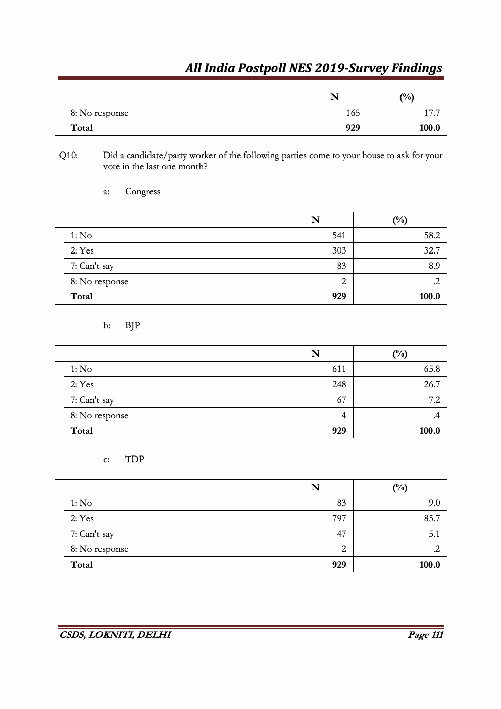
| col_0 | col_1 | N | (%) |
|---|---|---|---|
| NaN | 001: INC | 334 | 29.8 |
| NaN | 002: BJP | 388 | 34.6 |
| NaN | 007: AITC | 1 | 0.1 |
| NaN | 012: AAP | 1 | 0.1 |
| NaN | 021: AIMIM | 1 | 0.1 |
| NaN | 026: AGP | 17 | 1.5 |
| NaN | 027: AIUDF | 38 | 3.4 |
| NaN | 028: BPF | 22 | 2.0 |
| NaN | 900: Independent | 1 | 0.1 |
| NaN | 901: No party | 4 | 0.3 |
| NaN | 995: Will not vote | 4 | 0.4 |
| NaN | 996: Can't say | 210 | 18.7 |
Showing 12 of 15 rows.
No candidate rows extracted for this table yet.
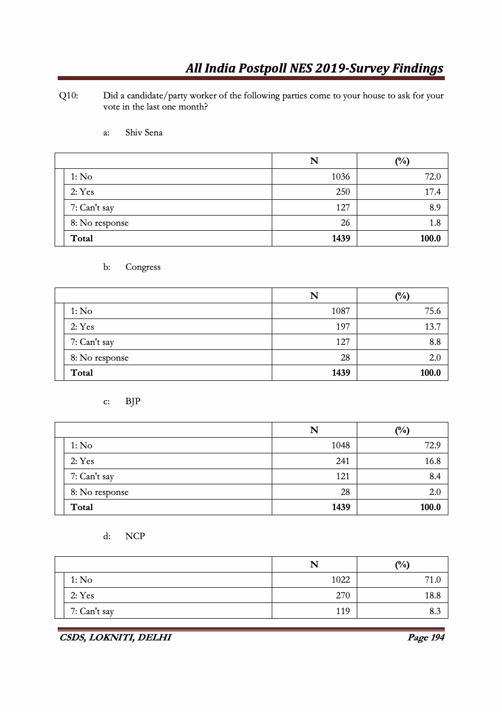
| col_0 | col_1 | N | (%) | Valid (%) |
|---|---|---|---|---|
| Valid | 01: People/protestors | 234 | 57.2 | 85.7 |
| NaN | 02: Civil Society | 10 | 2.3 | 3.5 |
| NaN | 03: Students | 1 | 0.4 | 0.5 |
| NaN | 04: Protests by political parties (generally) | 7 | 1.8 | 2.7 |
| NaN | 06: Congress/Congress leaders | 7 | 1.6 | 2.4 |
| NaN | 08: BJP | 4 | 0.9 | 1.4 |
| NaN | 25: Others | 3 | 0.7 | 1.0 |
| NaN | 98: No response | 7 | 1.8 | 2.7 |
| NaN | Total | 273 | 66.7 | 100.0 |
| Missing | 99: NA | 136 | 33.3 | NaN |
| Total | NaN | 409 | 100.0 | NaN |
No candidate rows extracted for this table yet.
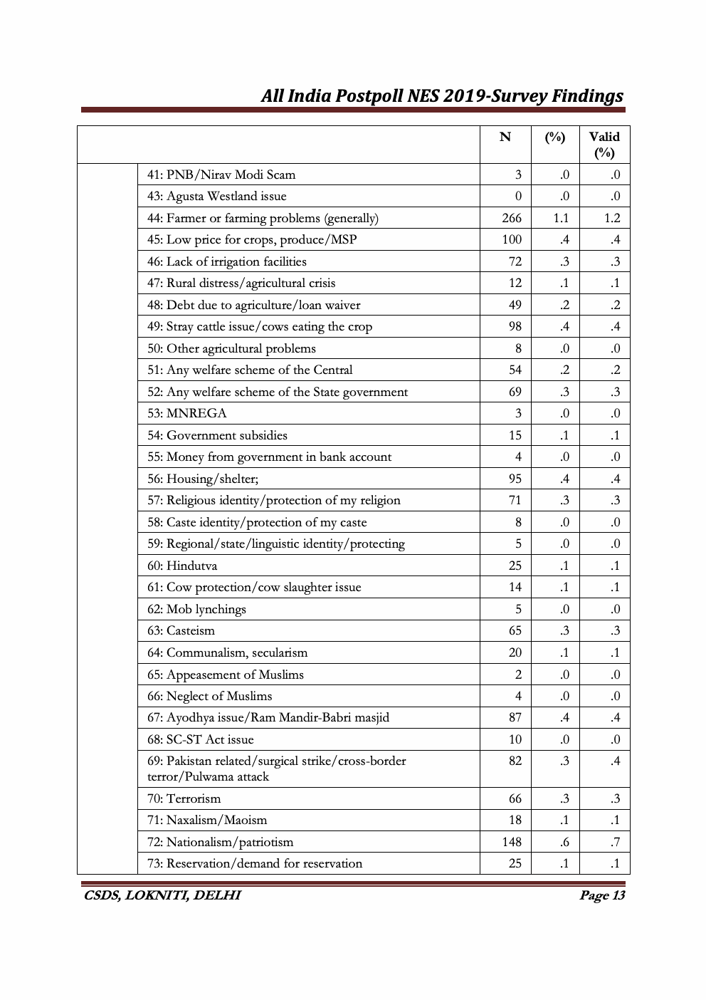
| col_0 | col_1 | N | (%) | Valid (%) |
|---|---|---|---|---|
| NaN | 41: PNB/Nirav Modi Scam | 3 | 0.0 | 0.0 |
| NaN | 43: Agusta Westland issue | 0 | 0.0 | 0.0 |
| NaN | 44: Farmer or farming problems (generally) | 266 | 1.1 | 1.2 |
| NaN | 45: Low price for crops, produce/MSP | 100 | 0.4 | 0.4 |
| NaN | 46: Lack of irrigation facilities | 72 | 0.3 | 0.3 |
| NaN | 47: Rural distress/agricultural crisis | 12 | 0.1 | 0.1 |
| NaN | 48: Debt due to agriculture/loan waiver | 49 | 0.2 | 0.2 |
| NaN | 49: Stray cattle issue/cows eating the crop | 98 | 0.4 | 0.4 |
| NaN | 50: Other agricultural problems | 8 | 0.0 | 0.0 |
| NaN | 51: Any welfare scheme of the Central | 54 | 0.2 | 0.2 |
| NaN | 52: Any welfare scheme of the State government | 69 | 0.3 | 0.3 |
| NaN | 53: MNREGA | 3 | 0.0 | 0.0 |
Showing 12 of 32 rows.
No candidate rows extracted for this table yet.
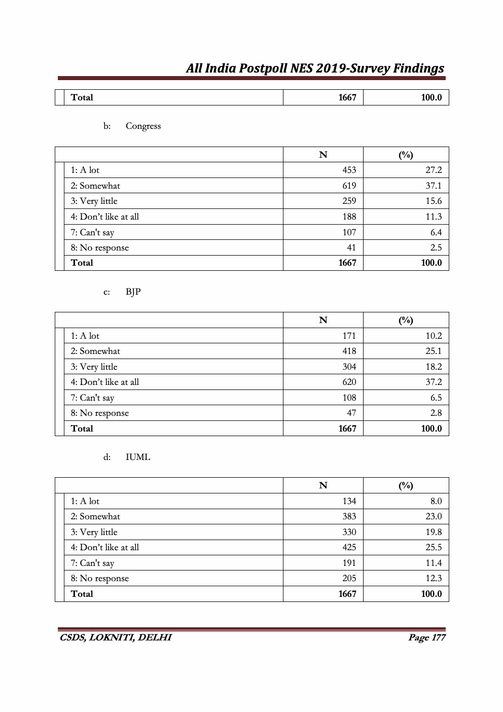
| col_0 | col_1 | N | (%) |
|---|---|---|---|
| NaN | 001: INC | 345 | 36.1 |
| NaN | 002: BJP | 540 | 56.6 |
| NaN | 003: BSP | 17 | 1.8 |
| NaN | 007: AITC | 1 | 0.1 |
| NaN | 009: LJP | 0 | 0.0 |
| NaN | 033: GGP | 10 | 1.0 |
| NaN | 901: No party | 1 | 0.1 |
| NaN | 996: Can't say | 23 | 2.4 |
| NaN | 998: No response | 18 | 1.9 |
| NaN | Total | 954 | 100.0 |
No candidate rows extracted for this table yet.
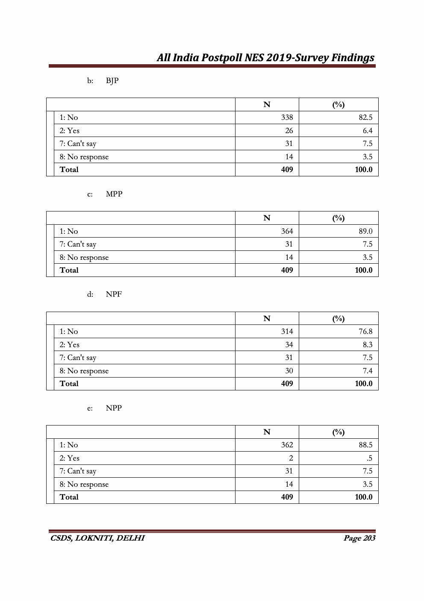
| col_0 | col_1 | N | (%) | Valid (%) |
|---|---|---|---|---|
| Valid | 01: People/protestors | 38 | 8.4 | 21.4 |
| NaN | 02: Civil Society | 7 | 1.7 | 4.2 |
| NaN | 03: Students | 1 | 0.2 | 0.4 |
| NaN | 04: Protests by political parties (generally) | 40 | 8.9 | 22.8 |
| NaN | 06: Congress/Congress leaders | 13 | 2.8 | 7.1 |
| NaN | 07: NPP/Conrad Sangma | 19 | 4.1 | 10.5 |
| NaN | 25: Others | 15 | 3.3 | 8.4 |
| NaN | 98: No response | 45 | 9.9 | 25.2 |
| NaN | Total | 177 | 39.1 | 100.0 |
| Missing | 99: NA | 276 | 60.9 | NaN |
| Total | NaN | 453 | 100.0 | NaN |
No candidate rows extracted for this table yet.
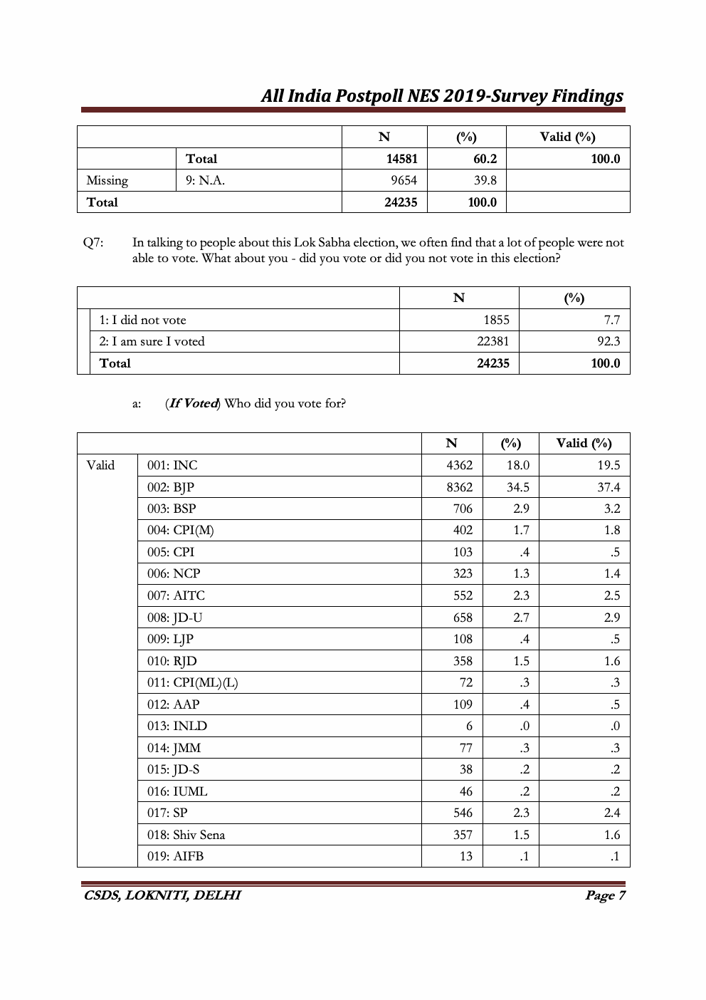
| col_0 | col_1 | N | (%) | Valid (%) |
|---|---|---|---|---|
| Valid | 001: INC | 4362 | 18.0 | 19.5 |
| NaN | 002: BJP | 8362 | 34.5 | 37.4 |
| NaN | 003: BSP | 706 | 2.9 | 3.2 |
| NaN | 004: CPI(M) | 402 | 1.7 | 1.8 |
| NaN | 005: CPI | 103 | 0.4 | 0.5 |
| NaN | 006: NCP | 323 | 1.3 | 1.4 |
| NaN | 007: AITC | 552 | 2.3 | 2.5 |
| NaN | 008: JD-U | 658 | 2.7 | 2.9 |
| NaN | 009: LJP | 108 | 0.4 | 0.5 |
| NaN | 010: RJD | 358 | 1.5 | 1.6 |
| NaN | 011: CPI(ML)(L) | 72 | 0.3 | 0.3 |
| NaN | 012: AAP | 109 | 0.4 | 0.5 |
Showing 12 of 19 rows.
No candidate rows extracted for this table yet.
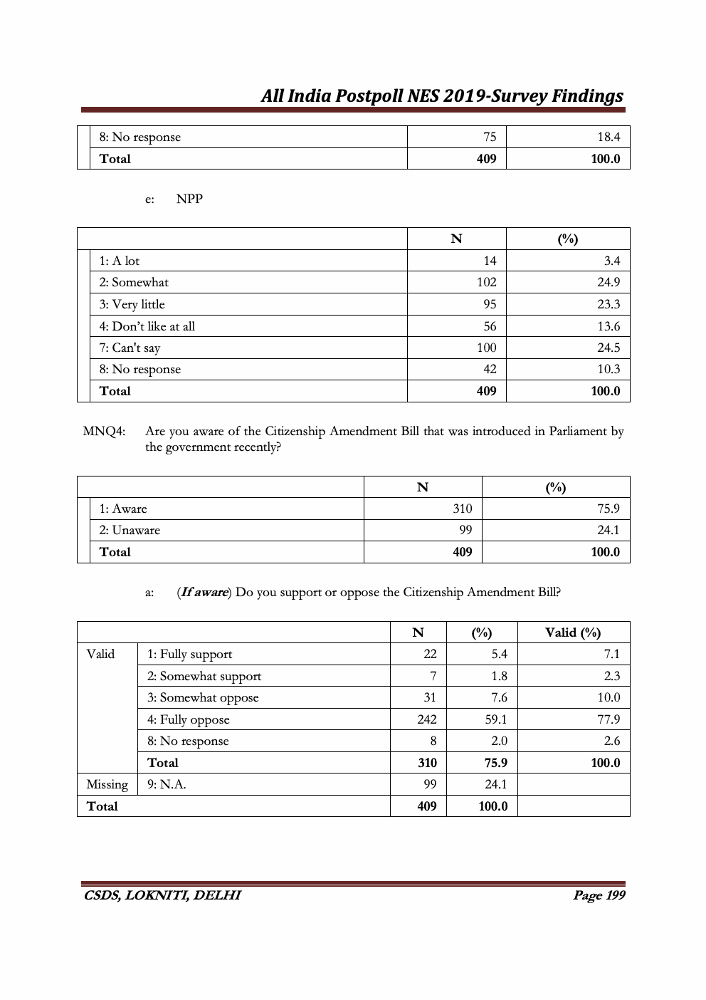
| col_0 | col_1 | N | (%) | Valid (%) |
|---|---|---|---|---|
| Valid | 001: INC | 191 | 42.2 | 42.5 |
| NaN | 002: BJP | 5 | 1.2 | 1.2 |
| NaN | 005: CPI | 2 | 0.4 | 0.4 |
| NaN | 006: NCP | 2 | 0.5 | 0.5 |
| NaN | 061: NPP | 95 | 20.9 | 21.0 |
| NaN | 064: UDP | 57 | 12.6 | 12.7 |
| NaN | 065: HSPDP | 2 | 0.4 | 0.4 |
| NaN | 066: GNC | 6 | 1.3 | 1.3 |
| NaN | 067: KHNAM | 3 | 0.6 | 0.6 |
| NaN | 900: Independent | 14 | 3.0 | 3.0 |
| NaN | 996: Can't say | 38 | 8.5 | 8.5 |
| NaN | 997: Any other party | 2 | 0.4 | 0.4 |
Showing 12 of 14 rows.
No candidate rows extracted for this table yet.
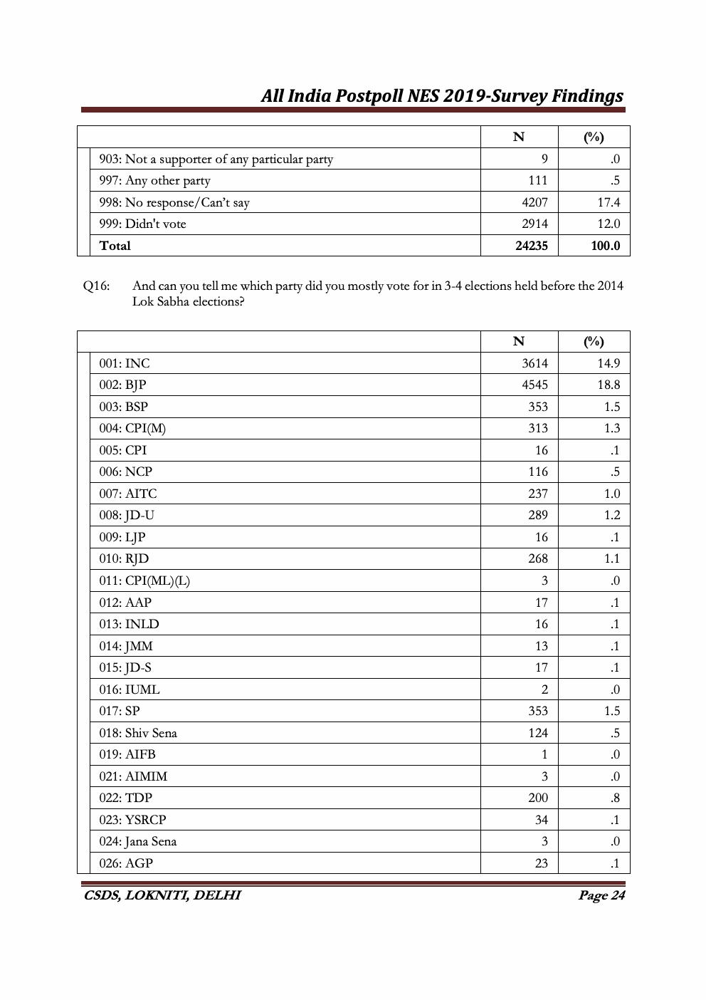
| col_0 | col_1 | N | (%) |
|---|---|---|---|
| NaN | 001: INC | 3614 | 14.9 |
| NaN | 002: BJP | 4545 | 18.8 |
| NaN | 003: BSP | 353 | 1.5 |
| NaN | 004: CPI(M) | 313 | 1.3 |
| NaN | 005: CPI | 16 | 0.1 |
| NaN | 006: NCP | 116 | 0.5 |
| NaN | 007: AITC | 237 | 1.0 |
| NaN | 008: JD-U | 289 | 1.2 |
| NaN | 009: LJP | 16 | 0.1 |
| NaN | 010: RJD | 268 | 1.1 |
| NaN | 011: CPI(ML)(L) | 3 | 0.0 |
| NaN | 012: AAP | 17 | 0.1 |
Showing 12 of 24 rows.
No candidate rows extracted for this table yet.
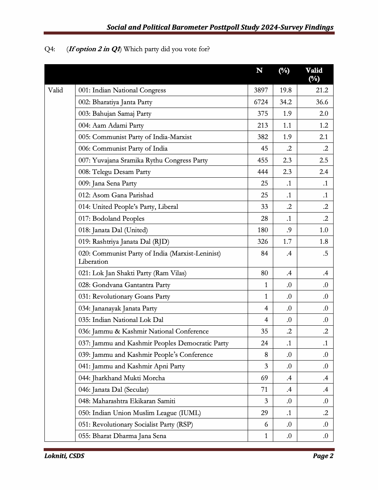
| col_0 | col_1 | N | (%) | col_4 | Valid | col_6 |
|---|---|---|---|---|---|---|
| NaN | NaN | NaN | NaN | NaN | (%) | NaN |
| Valid | 001: Indian National Congress | 3897.0 | 19.8 | 21.2 | NaN | NaN |
| NaN | 002: Bharatiya Janta Party | 6724.0 | 34.2 | 36.6 | NaN | NaN |
| NaN | 003: Bahujan Samaj Party | 375.0 | 1.9 | 2.0 | NaN | NaN |
| NaN | 004: Aam Adami Party | 213.0 | 1.1 | 1.2 | NaN | NaN |
| NaN | 005: Communist Party of India-Marxist | 382.0 | 1.9 | 2.1 | NaN | NaN |
| NaN | 006: Communist Party of India | 45.0 | 0.2 | 0.2 | NaN | NaN |
| NaN | 007: Yuvajana Sramika Rythu Congress Party | 455.0 | 2.3 | 2.5 | NaN | NaN |
| NaN | 008: Telegu Desam Party | 444.0 | 2.3 | 2.4 | NaN | NaN |
| NaN | 009: Jana Sena Party | 25.0 | 0.1 | 0.1 | NaN | NaN |
| NaN | 012: Asom Gana Parishad | 25.0 | 0.1 | 0.1 | NaN | NaN |
| NaN | 014: United People’s Party, Liberal | 33.0 | 0.2 | 0.2 | NaN | NaN |
Showing 12 of 31 rows.
No candidate rows extracted for this table yet.
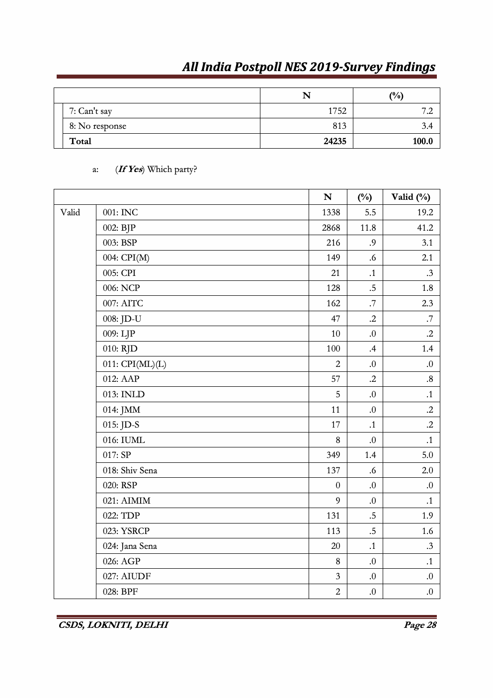
| col_0 | col_1 | N | (%) | Valid (%) |
|---|---|---|---|---|
| Valid | 001: INC | 1338 | 5.5 | 19.2 |
| NaN | 002: BJP | 2868 | 11.8 | 41.2 |
| NaN | 003: BSP | 216 | 0.9 | 3.1 |
| NaN | 004: CPI(M) | 149 | 0.6 | 2.1 |
| NaN | 005: CPI | 21 | 0.1 | 0.3 |
| NaN | 006: NCP | 128 | 0.5 | 1.8 |
| NaN | 007: AITC | 162 | 0.7 | 2.3 |
| NaN | 008: JD-U | 47 | 0.2 | 0.7 |
| NaN | 009: LJP | 10 | 0.0 | 0.2 |
| NaN | 010: RJD | 100 | 0.4 | 1.4 |
| NaN | 011: CPI(ML)(L) | 2 | 0.0 | 0.0 |
| NaN | 012: AAP | 57 | 0.2 | 0.8 |
Showing 12 of 26 rows.
No candidate rows extracted for this table yet.
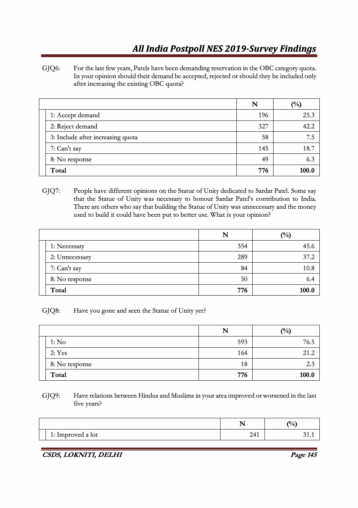
| col_0 | col_1 | N | (%) |
|---|---|---|---|
| NaN | 15: Dipendra Hooda (Cong) | 13 | 1.7 |
| NaN | 16: Kumari Selja (Cong) | 1 | 0.1 |
| NaN | 17: Rajkumar Sahni (LSP) | 2 | 0.3 |
| NaN | 25: Other Cong leaders | 13 | 1.8 |
| NaN | 26: Other BJP leaders | 27 | 3.6 |
| NaN | 27: Other INLD leaders | 1 | 0.2 |
| NaN | 29: AAP leaders | 1 | 0.1 |
| NaN | 30: BSP leaders | 23 | 3.1 |
| NaN | 95: Other leaders | 25 | 3.3 |
| NaN | 97: Can’t say | 204 | 27.0 |
| NaN | 98: No response | 98 | 12.9 |
| NaN | Total | 757 | 100.0 |
No candidate rows extracted for this table yet.
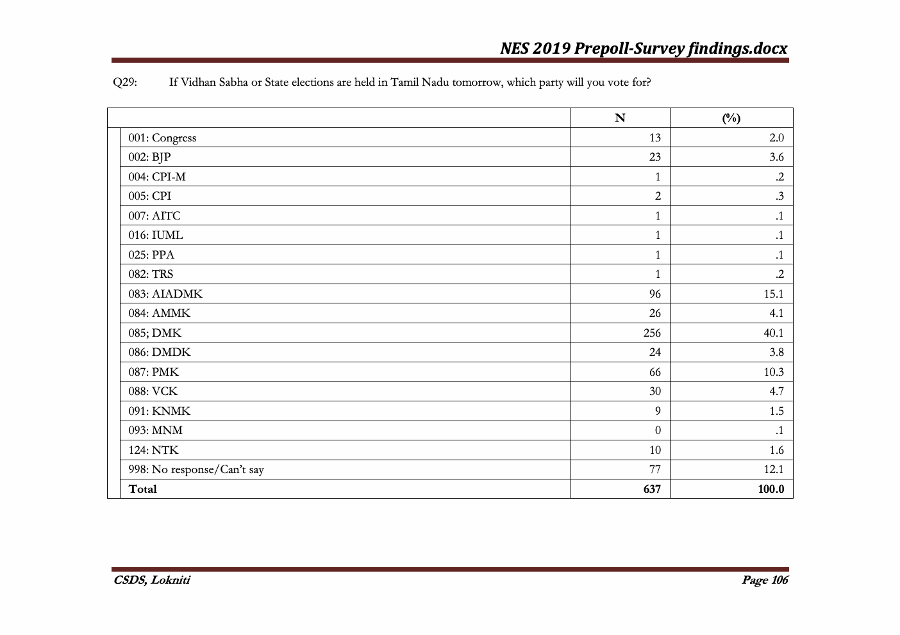
| col_0 | col_1 | N | (%) |
|---|---|---|---|
| NaN | 001: Congress | 13 | 2.0 |
| NaN | 002: BJP | 23 | 3.6 |
| NaN | 004: CPI-M | 1 | 0.2 |
| NaN | 005: CPI | 2 | 0.3 |
| NaN | 007: AITC | 1 | 0.1 |
| NaN | 016: IUML | 1 | 0.1 |
| NaN | 025: PPA | 1 | 0.1 |
| NaN | 082: TRS | 1 | 0.2 |
| NaN | 083: AIADMK | 96 | 15.1 |
| NaN | 084: AMMK | 26 | 4.1 |
| NaN | 085; DMK | 256 | 40.1 |
| NaN | 086: DMDK | 24 | 3.8 |
Showing 12 of 19 rows.
| party_or_alliance | voter_group_type | voter_group | vote_share | extraction_confidence | raw_row_label | raw_column_label | raw_cell_value |
|---|---|---|---|---|---|---|---|
| INC | electorate | all voters | 2.0 | medium | 001: Congress | (%) | 2.0 |
| BJP | electorate | all voters | 3.6 | high | 002: BJP | (%) | 3.6 |
| TMC | electorate | all voters | 10.0 | high | 007: AITC | (%) | 0.1 |
| AIADMK | electorate | all voters | 15.1 | high | 083: AIADMK | (%) | 15.1 |
| DMK | electorate | all voters | 40.1 | high | 085; DMK | (%) | 40.1 |
| Others | electorate | all voters | 12.1 | high | 998: No response/Can’t say | (%) | 12.1 |
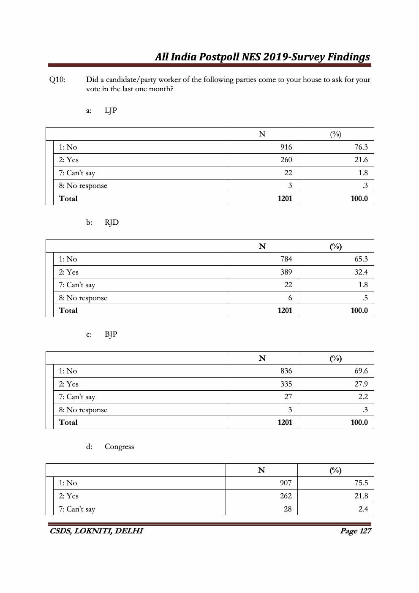
| col_0 | col_1 | N | (%) | Valid (%) |
|---|---|---|---|---|
| Valid | 001: INC | 210 | 34.8 | 35.2 |
| NaN | 002: BJP | 221 | 36.6 | 36.9 |
| NaN | 006: NCP | 0 | 0.1 | 0.1 |
| NaN | 012: AAP | 14 | 2.3 | 2.3 |
| NaN | 032: JCC-J | 1 | 0.1 | 0.1 |
| NaN | 034: MGP | 1 | 0.1 | 0.1 |
| NaN | 900: Independent | 11 | 1.8 | 1.9 |
| NaN | 996: Can't say | 82 | 13.6 | 13.7 |
| NaN | 998: No response | 58 | 9.7 | 9.7 |
| NaN | Total | 597 | 99.0 | 100.0 |
| Missing | 999: Not voted | 6 | 1.0 | NaN |
| Total | NaN | 603 | 100.0 | NaN |
No candidate rows extracted for this table yet.
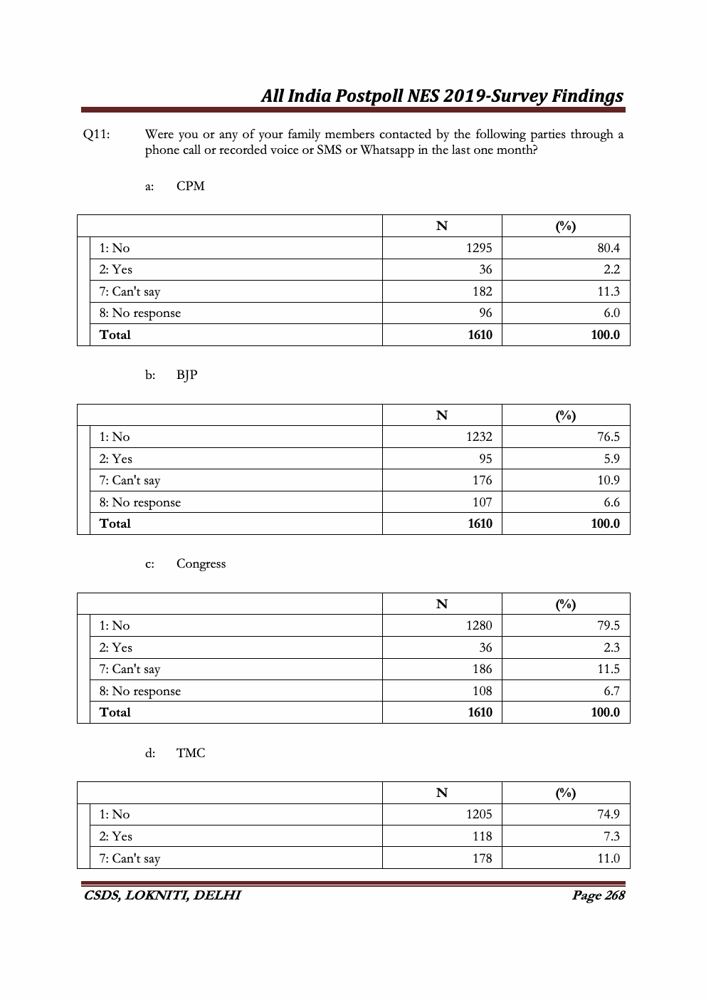
| col_0 | col_1 | N | (%) |
|---|---|---|---|
| NaN | 001: INC | 88 | 13.6 |
| NaN | 002: BJP | 273 | 42.1 |
| NaN | 003: BSP | 18 | 2.7 |
| NaN | 004: CPI(M) | 1 | 0.1 |
| NaN | 005: CPI | 3 | 0.5 |
| NaN | 007: AITC | 3 | 0.5 |
| NaN | 010: RJD | 12 | 1.9 |
| NaN | 014: JMM | 135 | 20.8 |
| NaN | 043: AJSUP | 30 | 4.6 |
| NaN | 044: JVM-P | 39 | 6.0 |
| NaN | 996: Can't say | 39 | 6.0 |
| NaN | 998: No response | 7 | 1.1 |
Showing 12 of 13 rows.
No candidate rows extracted for this table yet.
| col_0 | col_1 | col_2 | col_3 | col_4 | N | col_6 | col_7 | (%) | col_9 |
|---|---|---|---|---|---|---|---|---|---|
| NaN | NaN | 01: Increasing unemployment | NaN | 2268 | NaN | NaN | 22.6 | NaN | NaN |
| NaN | NaN | 02: Poverty | NaN | 972 | NaN | NaN | 9.7 | NaN | NaN |
| NaN | NaN | 03: Dealing with corruption/scams | NaN | 676 | NaN | NaN | 6.7 | NaN | NaN |
| NaN | NaN | 04: Price rise/inflation | NaN | 2303 | NaN | NaN | 23.0 | NaN | NaN |
| NaN | NaN | 05: Development issue | NaN | 378 | NaN | NaN | 3.8 | NaN | NaN |
| NaN | NaN | 06: Poor condition of roads or transport etc. | NaN | 151 | NaN | NaN | 1.5 | NaN | NaN |
| NaN | NaN | 07: Lack of economic growth | NaN | 177 | NaN | NaN | 1.8 | NaN | NaN |
| NaN | NaN | 08: Bad governance | NaN | 176 | NaN | NaN | 1.8 | NaN | NaN |
| NaN | NaN | 09: Drinking water | NaN | 108 | NaN | NaN | 1.1 | NaN | NaN |
| NaN | NaN | 10: Electricity | NaN | 30 | NaN | NaN | 0.3 | NaN | NaN |
| NaN | NaN | 11: Health Services | NaN | 79 | NaN | NaN | 0.8 | NaN | NaN |
No candidate rows extracted for this table yet.
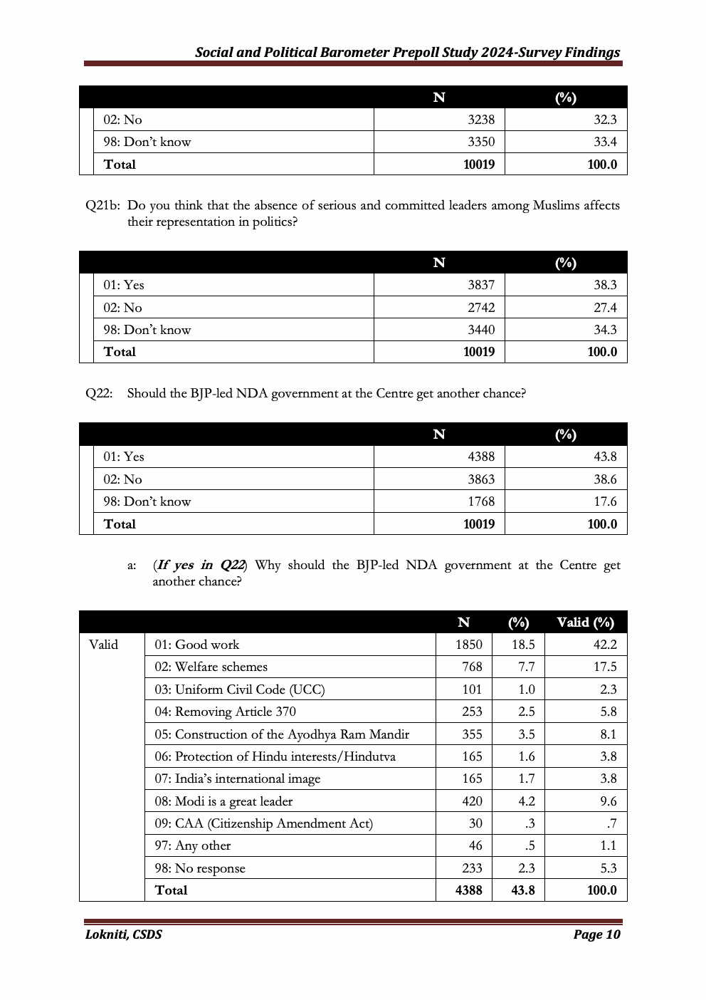
| col_0 | col_1 | col_2 | col_3 | col_4 | N | col_6 | col_7 | (%) | col_9 | col_10 | Valid (%) | col_12 |
|---|---|---|---|---|---|---|---|---|---|---|---|---|
| Valid | NaN | 01: Good work | NaN | 1850 | NaN | NaN | 18.5 | NaN | NaN | 42.2 | NaN | NaN |
| NaN | NaN | 02: Welfare schemes | NaN | 768 | NaN | NaN | 7.7 | NaN | NaN | 17.5 | NaN | NaN |
| NaN | NaN | 03: Uniform Civil Code (UCC) | NaN | 101 | NaN | NaN | 1.0 | NaN | NaN | 2.3 | NaN | NaN |
| NaN | NaN | 04: Removing Article 370 | NaN | 253 | NaN | NaN | 2.5 | NaN | NaN | 5.8 | NaN | NaN |
| NaN | NaN | 05: Construction of the Ayodhya Ram Mandir | NaN | 355 | NaN | NaN | 3.5 | NaN | NaN | 8.1 | NaN | NaN |
| NaN | NaN | 06: Protection of Hindu interests/Hindutva | NaN | 165 | NaN | NaN | 1.6 | NaN | NaN | 3.8 | NaN | NaN |
| NaN | NaN | 07: India‟s international image | NaN | 165 | NaN | NaN | 1.7 | NaN | NaN | 3.8 | NaN | NaN |
| NaN | NaN | 08: Modi is a great leader | NaN | 420 | NaN | NaN | 4.2 | NaN | NaN | 9.6 | NaN | NaN |
| NaN | NaN | 09: CAA (Citizenship Amendment Act) | NaN | 30 | NaN | NaN | 0.3 | NaN | NaN | 0.7 | NaN | NaN |
| NaN | NaN | 97: Any other | NaN | 46 | NaN | NaN | 0.5 | NaN | NaN | 1.1 | NaN | NaN |
| NaN | NaN | 98: No response | NaN | 233 | NaN | NaN | 2.3 | NaN | NaN | 5.3 | NaN | NaN |
| NaN | NaN | Total | NaN | 4388 | NaN | NaN | 43.8 | NaN | NaN | 100.0 | NaN | NaN |
No candidate rows extracted for this table yet.
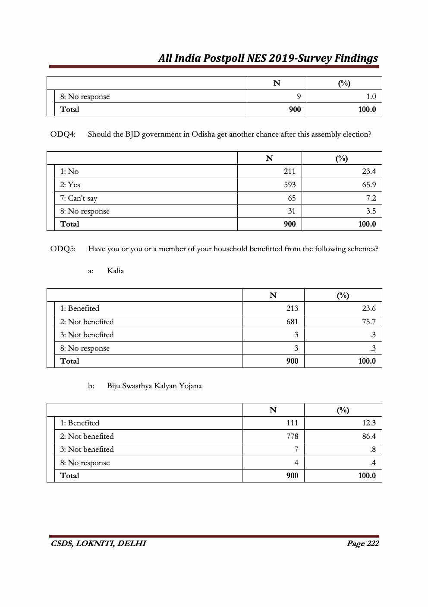
| col_0 | col_1 | N | (%) |
|---|---|---|---|
| NaN | 001: INC | 184 | 28.9 |
| NaN | 002: BJP | 38 | 5.9 |
| NaN | 003: BSP | 14 | 2.2 |
| NaN | 012: AAP | 37 | 5.9 |
| NaN | 071: SAD | 109 | 17.2 |
| NaN | 072: LIP | 10 | 1.6 |
| NaN | 074: SAD-T | 2 | 0.3 |
| NaN | 075: SAD(Amritsar) | 7 | 1.0 |
| NaN | 995: Did not vote | 23 | 3.7 |
| NaN | 996: Can't say | 132 | 20.8 |
| NaN | 998: No response | 79 | 12.4 |
| NaN | Total | 635 | 100.0 |
No candidate rows extracted for this table yet.
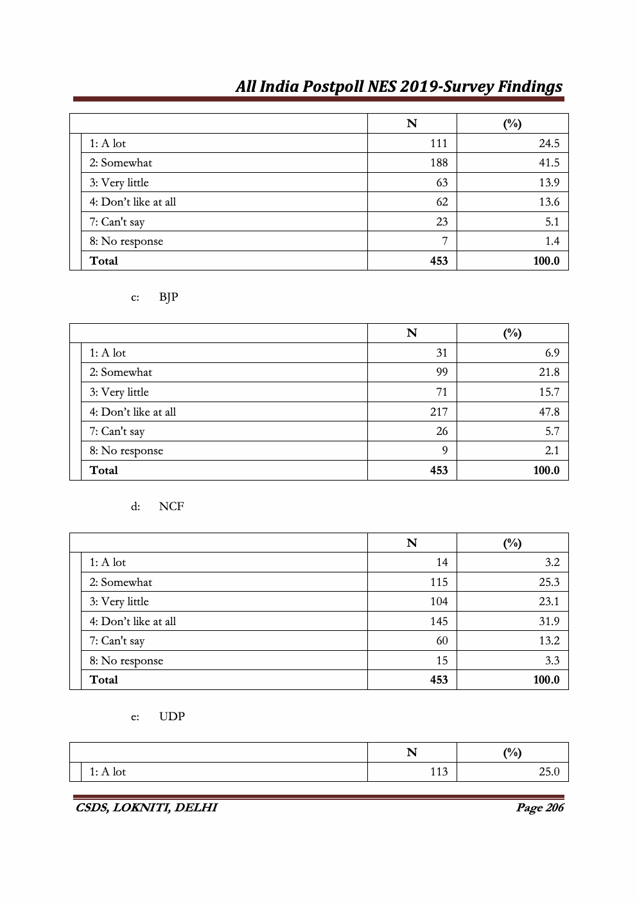
| col_0 | col_1 | N | (%) |
|---|---|---|---|
| NaN | 001: INC | 25 | 7.1 |
| NaN | 002: BJP | 9 | 2.5 |
| NaN | 008: JD-U | 1 | 0.2 |
| NaN | 060: NPF | 91 | 25.3 |
| NaN | 061: NPP | 45 | 12.5 |
| NaN | 120: NDPP | 115 | 32.1 |
| NaN | 900: Independent | 12 | 3.4 |
| NaN | 996: Can't say | 26 | 7.2 |
| NaN | 998: No response | 34 | 9.6 |
| NaN | Total | 358 | 100.0 |
No candidate rows extracted for this table yet.
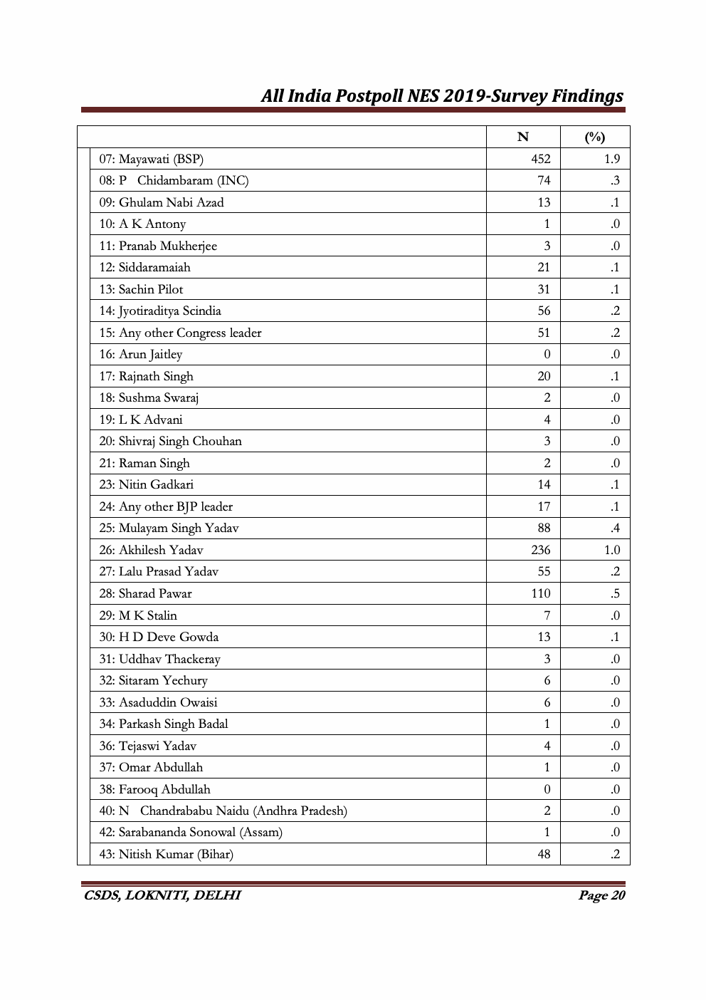
| col_0 | col_1 | N | (%) |
|---|---|---|---|
| NaN | 07: Mayawati (BSP) | 452 | 1.9 |
| NaN | 08: P Chidambaram (INC) | 74 | 0.3 |
| NaN | 09: Ghulam Nabi Azad | 13 | 0.1 |
| NaN | 10: A K Antony | 1 | 0.0 |
| NaN | 11: Pranab Mukherjee | 3 | 0.0 |
| NaN | 12: Siddaramaiah | 21 | 0.1 |
| NaN | 13: Sachin Pilot | 31 | 0.1 |
| NaN | 14: Jyotiraditya Scindia | 56 | 0.2 |
| NaN | 15: Any other Congress leader | 51 | 0.2 |
| NaN | 16: Arun Jaitley | 0 | 0.0 |
| NaN | 17: Rajnath Singh | 20 | 0.1 |
| NaN | 18: Sushma Swaraj | 2 | 0.0 |
Showing 12 of 33 rows.
No candidate rows extracted for this table yet.
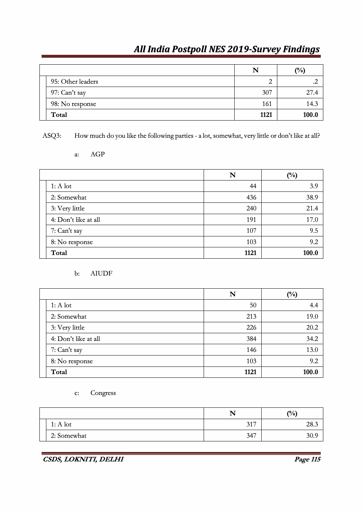
| col_0 | col_1 | N | (%) | Valid (%) |
|---|---|---|---|---|
| Valid | 01: People/protestors | 238 | 21.2 | 45.5 |
| NaN | 02: Civil Society | 56 | 5.0 | 10.7 |
| NaN | 03: Students | 33 | 2.9 | 6.3 |
| NaN | 04: Protests by political parties (generally) | 24 | 2.1 | 4.6 |
| NaN | 05: AGP/AGP leaders | 3 | 0.3 | 0.6 |
| NaN | 06: Congress/Congress leaders | 63 | 5.6 | 12.1 |
| NaN | 07: NPP/Conrad Sangma | 1 | 0.1 | 0.2 |
| NaN | 08: BJP | 2 | 0.2 | 0.4 |
| NaN | 25: Others | 5 | 0.4 | 1.0 |
| NaN | 98: No response | 97 | 8.7 | 18.7 |
| NaN | Total | 522 | 46.5 | 100.0 |
| Missing | 99: NA | 599 | 53.5 | NaN |
Showing 12 of 13 rows.
No candidate rows extracted for this table yet.
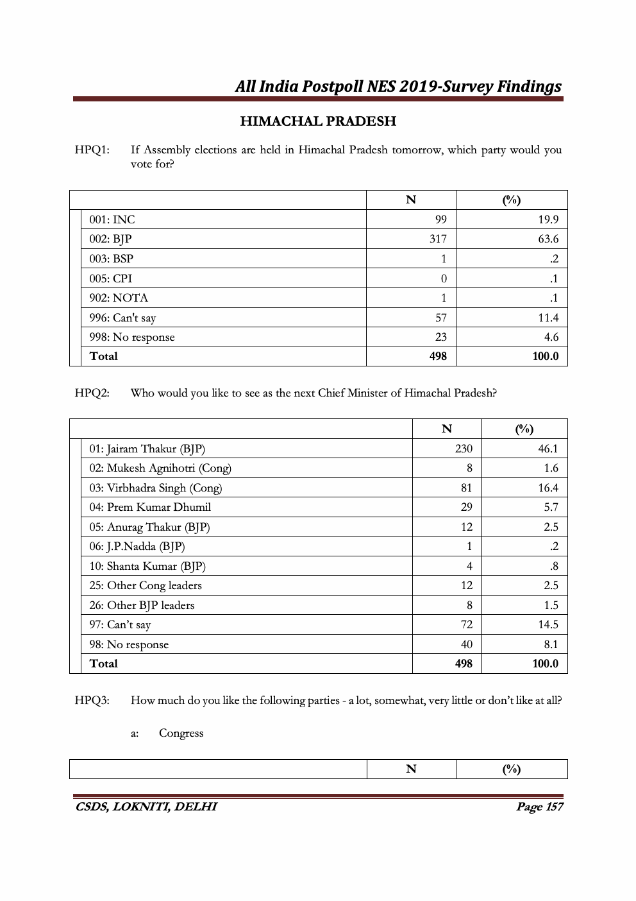
| col_0 | col_1 | N | (%) |
|---|---|---|---|
| NaN | 001: INC | 32 | 5.2 |
| NaN | 002: BJP | 120 | 19.5 |
| NaN | 003: BSP | 1 | 0.2 |
| NaN | 026: AGP | 1 | 0.1 |
| NaN | 037: JJP | 0 | 0.1 |
| NaN | 039: National Conference | 103 | 16.8 |
| NaN | 040: PDP | 14 | 2.4 |
| NaN | 042: People’s Conference | 15 | 2.5 |
| NaN | 501: Jammu & Kashmir People movement | 9 | 1.5 |
| NaN | 996: Can't say | 133 | 21.7 |
| NaN | 997: Any other party | 0 | 0.1 |
| NaN | 998: No response | 186 | 30.2 |
Showing 12 of 13 rows.
No candidate rows extracted for this table yet.
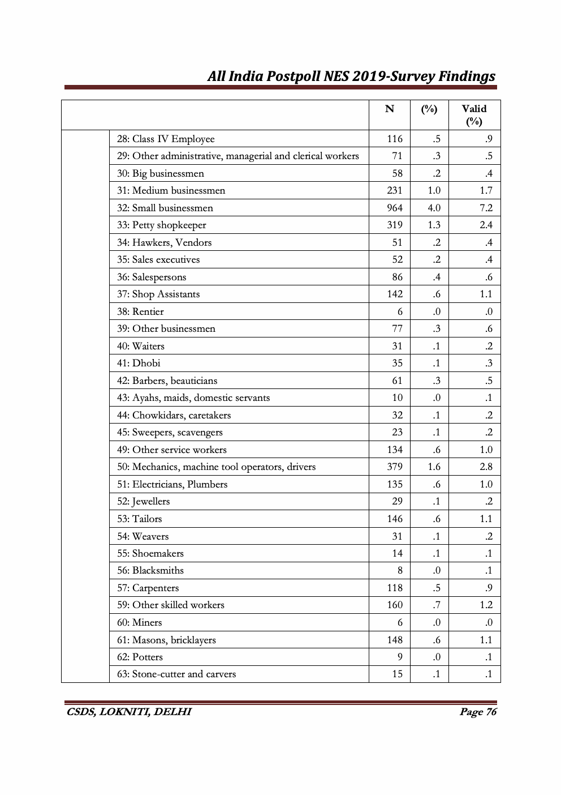
| col_0 | col_1 | N | (%) |
|---|---|---|---|
| NaN | 391: Other Craftsmen | 3 | 0.0 |
| NaN | 399: Other Artisan OBCs | 184 | 0.8 |
| NaN | 400: Kewat (Fishermen & Boatmen) | 281 | 1.2 |
| NaN | 401: Baraba | 23 | 0.1 |
| NaN | 403: Bandari Naik, Gabit, Gosavi | 1 | 0.0 |
| NaN | 404: Meitei/ Meetei Hindu OBC | 16 | 0.1 |
| NaN | 410: Dhobi (Washermen) | 162 | 0.7 |
| NaN | 420: Nai (Barber) | 197 | 0.8 |
| NaN | 430: Teli (Oil Pressers) | 291 | 1.2 |
| NaN | 435: Jogi (Mendicants & seek Alms) | 133 | 0.5 |
| NaN | 445: Trader OBCs | 149 | 0.6 |
| NaN | 455: Ezhavas Toddy Tappers | 169 | 0.7 |
Showing 12 of 33 rows.
No candidate rows extracted for this table yet.
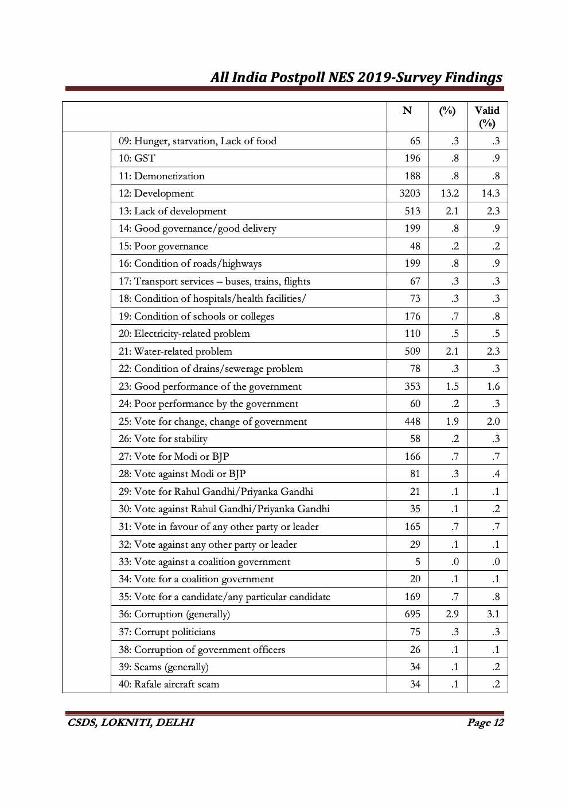
| col_0 | col_1 | N | (%) | Valid (%) |
|---|---|---|---|---|
| NaN | 09: Hunger, starvation, Lack of food | 65 | 0.3 | 0.3 |
| NaN | 10: GST | 196 | 0.8 | 0.9 |
| NaN | 11: Demonetization | 188 | 0.8 | 0.8 |
| NaN | 12: Development | 3203 | 13.2 | 14.3 |
| NaN | 13: Lack of development | 513 | 2.1 | 2.3 |
| NaN | 14: Good governance/good delivery | 199 | 0.8 | 0.9 |
| NaN | 15: Poor governance | 48 | 0.2 | 0.2 |
| NaN | 16: Condition of roads/highways | 199 | 0.8 | 0.9 |
| NaN | 17: Transport services – buses, trains, flights | 67 | 0.3 | 0.3 |
| NaN | 18: Condition of hospitals/health facilities/ | 73 | 0.3 | 0.3 |
| NaN | 19: Condition of schools or colleges | 176 | 0.7 | 0.8 |
| NaN | 20: Electricity-related problem | 110 | 0.5 | 0.5 |
Showing 12 of 32 rows.
No candidate rows extracted for this table yet.
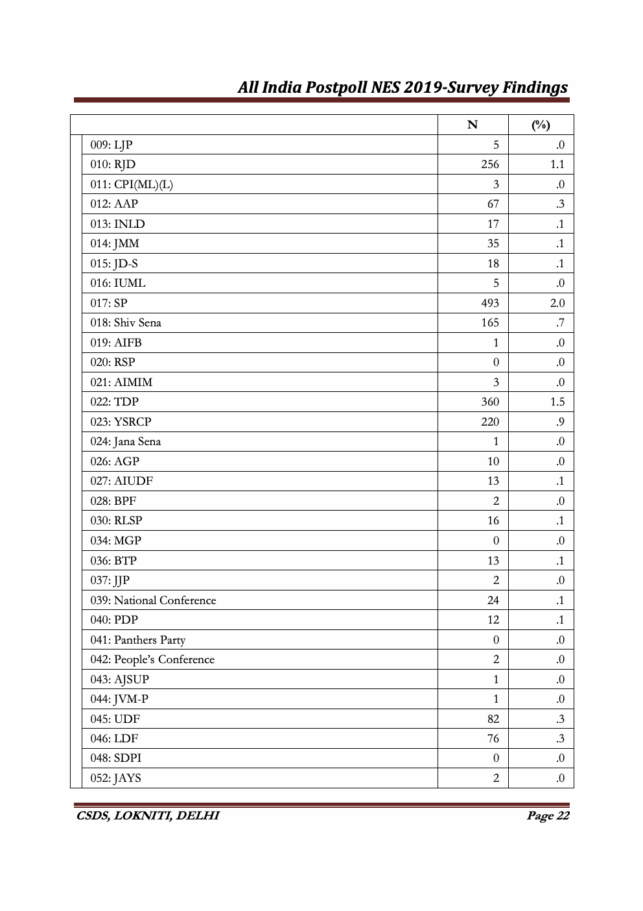
| col_0 | col_1 | N | (%) |
|---|---|---|---|
| NaN | 009: LJP | 5 | 0.0 |
| NaN | 010: RJD | 256 | 1.1 |
| NaN | 011: CPI(ML)(L) | 3 | 0.0 |
| NaN | 012: AAP | 67 | 0.3 |
| NaN | 013: INLD | 17 | 0.1 |
| NaN | 014: JMM | 35 | 0.1 |
| NaN | 015: JD-S | 18 | 0.1 |
| NaN | 016: IUML | 5 | 0.0 |
| NaN | 017: SP | 493 | 2.0 |
| NaN | 018: Shiv Sena | 165 | 0.7 |
| NaN | 019: AIFB | 1 | 0.0 |
| NaN | 020: RSP | 0 | 0.0 |
Showing 12 of 33 rows.
No candidate rows extracted for this table yet.
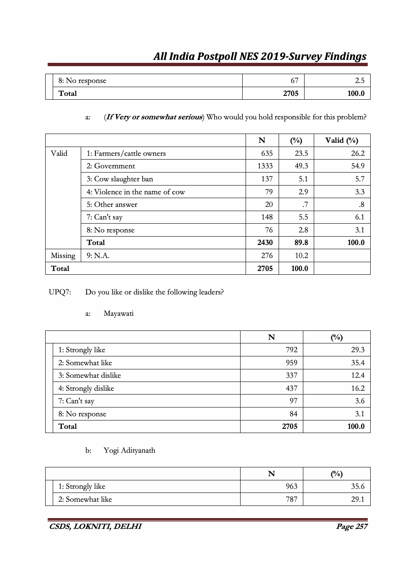
| col_0 | col_1 | N | (%) |
|---|---|---|---|
| NaN | 001: INC | 46 | 2.9 |
| NaN | 002: BJP | 457 | 28.4 |
| NaN | 004: CPI(M) | 44 | 2.7 |
| NaN | 005: CPI | 4 | 0.3 |
| NaN | 007: AITC | 651 | 40.4 |
| NaN | 009: LJP | 1 | 0.1 |
| NaN | 019: AIFB | 1 | 0.0 |
| NaN | 067: KHNAM | 1 | 0.1 |
| NaN | 109: Left Front | 2 | 0.2 |
| NaN | 110: SUCI | 6 | 0.3 |
| NaN | 901: No party | 0 | 0.0 |
| NaN | 902: NOTA | 13 | 0.8 |
Showing 12 of 16 rows.
No candidate rows extracted for this table yet.
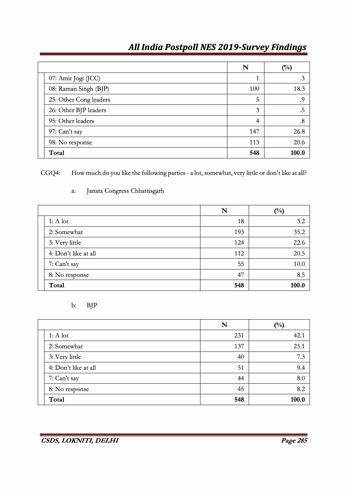
| col_0 | col_1 | N | (%) |
|---|---|---|---|
| NaN | 01: Trivendra Singh Rawat (BJP) | 133 | 30.0 |
| NaN | 02: Indira Hridayesh (Cong) | 12 | 2.8 |
| NaN | 03: Harish Rawat (Cong) | 78 | 17.7 |
| NaN | 04: Ramesh Pokhriyal (BJP) | 23 | 5.3 |
| NaN | 06: B C Khanduri (BJP) | 36 | 8.1 |
| NaN | 07: Manish Khanduri (Congress) | 1 | 0.1 |
| NaN | 08: Satpal Maharaj (BJP) | 3 | 0.7 |
| NaN | 09: Dhan Singh Rawat (BJP) | 6 | 1.3 |
| NaN | 10: Vijay Bahuguna (BJP) | 2 | 0.3 |
| NaN | 25: Other Cong leaders | 2 | 0.5 |
| NaN | 26: Other BJP leaders | 3 | 0.6 |
| NaN | 95: Other leaders | 5 | 1.0 |
Showing 12 of 15 rows.
No candidate rows extracted for this table yet.
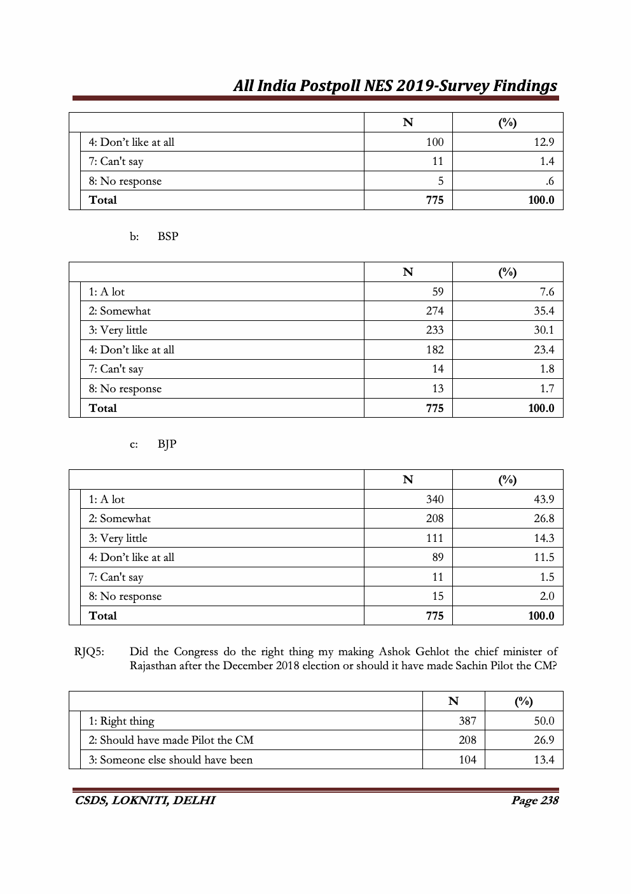
| col_0 | col_1 | N | (%) |
|---|---|---|---|
| NaN | 03: M. K. Stalin (DMK) | 648 | 37.4 |
| NaN | 04: Kanimozhi (DMK) | 48 | 2.8 |
| NaN | 05: M K Azhagiri (DMK) | 4 | 0.2 |
| NaN | 06: Dayanidhi Maran (DMK) | 24 | 1.4 |
| NaN | 07: Tamilsai Soundarajan (BJP) | 8 | 0.5 |
| NaN | 08: S Ramadoss (PMK) | 54 | 3.1 |
| NaN | 09: TTV Dhinakaran (AMMK) | 105 | 6.0 |
| NaN | 11: Vaiko (MDMK) | 1 | 0.0 |
| NaN | 12: Vijaykanth (DMDK) | 18 | 1.0 |
| NaN | 25: Other Cong leaders | 1 | 0.0 |
| NaN | 29: Other AMMK leaders | 5 | 0.3 |
| NaN | 34: Other MNM leaders | 1 | 0.1 |
Showing 12 of 16 rows.
No candidate rows extracted for this table yet.
| col_0 | col_1 | N | (%) |
|---|---|---|---|
| NaN | 01: Naveen Patnaik (BJD) | 611 | 67.8 |
| NaN | 02: Niranjan Patnaik (Cong) | 40 | 4.4 |
| NaN | 03: Dharmendra Pradhan (BJP) | 65 | 7.2 |
| NaN | 04: Baijayant Panda (BJP) | 12 | 1.3 |
| NaN | 05: Sambit Patra (BJP) | 16 | 1.8 |
| NaN | 07: Ripunath Seth (Cong) | 2 | 0.2 |
| NaN | 13: Pratap Jena (BJD) | 3 | 0.3 |
| NaN | 25: Other Cong leaders | 11 | 1.3 |
| NaN | 26: Other BJD leaders | 1 | 0.1 |
| NaN | 27: Other BJP leaders | 11 | 1.2 |
| NaN | 95: Other leaders | 34 | 3.8 |
| NaN | 97: Can’t say | 75 | 8.3 |
Showing 12 of 13 rows.
No candidate rows extracted for this table yet.
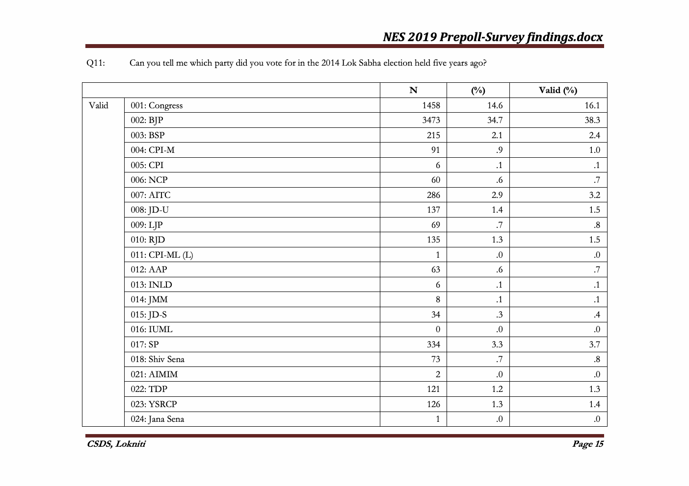
| col_0 | col_1 | N | (%) | Valid (%) |
|---|---|---|---|---|
| Valid | 001: Congress | 1458 | 14.6 | 16.1 |
| NaN | 002: BJP | 3473 | 34.7 | 38.3 |
| NaN | 003: BSP | 215 | 2.1 | 2.4 |
| NaN | 004: CPI-M | 91 | 0.9 | 1.0 |
| NaN | 005: CPI | 6 | 0.1 | 0.1 |
| NaN | 006: NCP | 60 | 0.6 | 0.7 |
| NaN | 007: AITC | 286 | 2.9 | 3.2 |
| NaN | 008: JD-U | 137 | 1.4 | 1.5 |
| NaN | 009: LJP | 69 | 0.7 | 0.8 |
| NaN | 010: RJD | 135 | 1.3 | 1.5 |
| NaN | 011: CPI-ML (L) | 1 | 0.0 | 0.0 |
| NaN | 012: AAP | 63 | 0.6 | 0.7 |
Showing 12 of 22 rows.
No candidate rows extracted for this table yet.
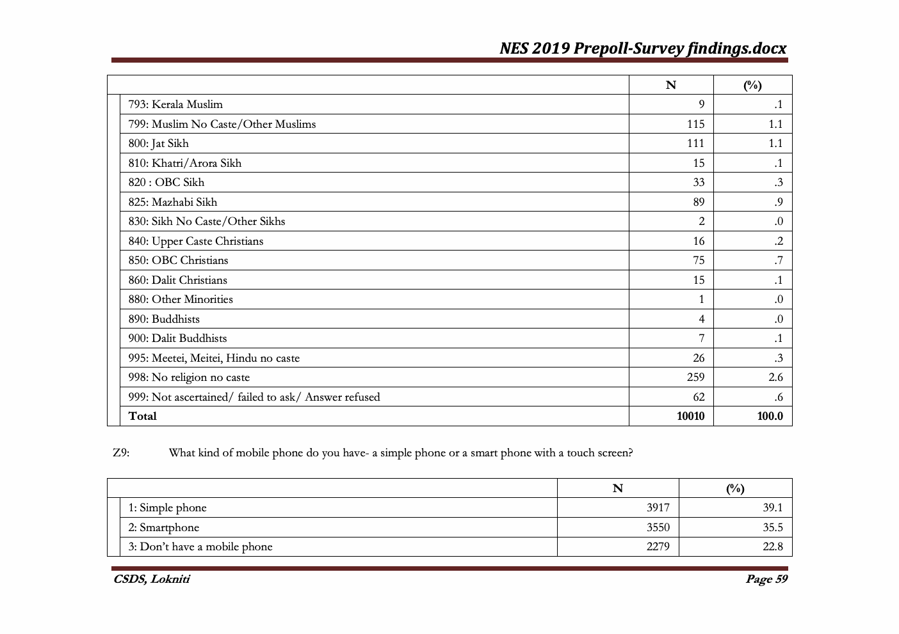
| col_0 | col_1 | N | (%) |
|---|---|---|---|
| NaN | 793: Kerala Muslim | 9 | 0.1 |
| NaN | 799: Muslim No Caste/Other Muslims | 115 | 1.1 |
| NaN | 800: Jat Sikh | 111 | 1.1 |
| NaN | 810: Khatri/Arora Sikh | 15 | 0.1 |
| NaN | 820 : OBC Sikh | 33 | 0.3 |
| NaN | 825: Mazhabi Sikh | 89 | 0.9 |
| NaN | 830: Sikh No Caste/Other Sikhs | 2 | 0.0 |
| NaN | 840: Upper Caste Christians | 16 | 0.2 |
| NaN | 850: OBC Christians | 75 | 0.7 |
| NaN | 860: Dalit Christians | 15 | 0.1 |
| NaN | 880: Other Minorities | 1 | 0.0 |
| NaN | 890: Buddhists | 4 | 0.0 |
Showing 12 of 17 rows.
No candidate rows extracted for this table yet.
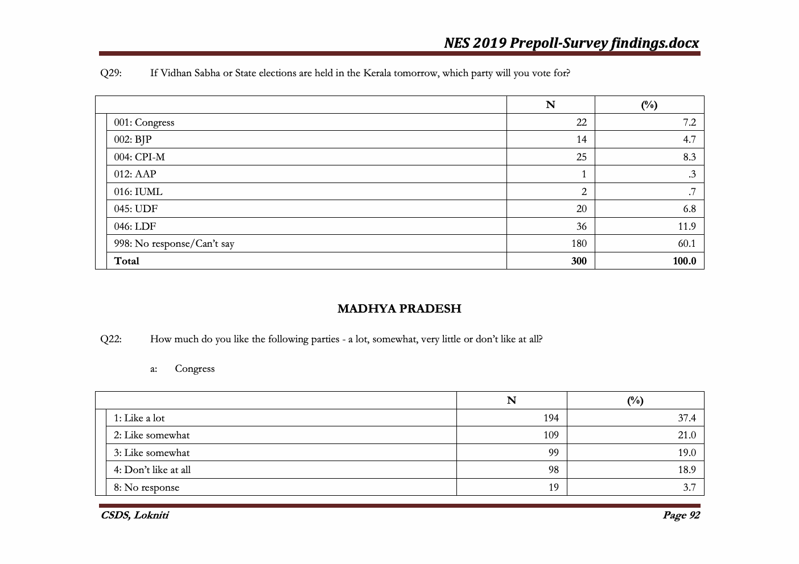
| col_0 | col_1 | N | (%) |
|---|---|---|---|
| NaN | 001: Congress | 22 | 7.2 |
| NaN | 002: BJP | 14 | 4.7 |
| NaN | 004: CPI-M | 25 | 8.3 |
| NaN | 012: AAP | 1 | 0.3 |
| NaN | 016: IUML | 2 | 0.7 |
| NaN | 045: UDF | 20 | 6.8 |
| NaN | 046: LDF | 36 | 11.9 |
| NaN | 998: No response/Can’t say | 180 | 60.1 |
| NaN | Total | 300 | 100.0 |
| party_or_alliance | voter_group_type | voter_group | vote_share | extraction_confidence | raw_row_label | raw_column_label | raw_cell_value |
|---|---|---|---|---|---|---|---|
| INC | electorate | all voters | 7.2 | medium | 001: Congress | (%) | 7.2 |
| BJP | electorate | all voters | 4.7 | high | 002: BJP | (%) | 4.7 |
| AAP | electorate | all voters | 30.0 | high | 012: AAP | (%) | 0.3 |
| Others | electorate | all voters | 60.1 | high | 998: No response/Can’t say | (%) | 60.1 |
| col_0 | col_1 | N | (%) |
|---|---|---|---|
| NaN | 01: Pinarayi Vijayan (LDF) | 334 | 20.1 |
| NaN | 02: Ramesh Chennithala (Cong) | 72 | 4.3 |
| NaN | 03: Oommen Chandy (BJP) | 284 | 17.0 |
| NaN | 04: Shashi Tharoor (Cong) | 8 | 0.5 |
| NaN | 05: A K Antony | 14 | 0.9 |
| NaN | 06: O. Rajagopal (BJP) | 8 | 0.5 |
| NaN | 07: Kummanam Rajasekharan (BJP) | 34 | 2.0 |
| NaN | 08: T M Thomas Isaac (CPM) | 6 | 0.3 |
| NaN | 09: G Sudhakaran (CPM) | 1 | 0.1 |
| NaN | 12: V S Achuthanandan (CPM) | 64 | 3.8 |
| NaN | 13: Mullappally Ramachandran (Cong) | 1 | 0.0 |
| NaN | 14: PK Kunhalikutty (IUML) | 1 | 0.1 |
Showing 12 of 20 rows.
No candidate rows extracted for this table yet.
| col_0 | col_1 | N | (%) | Valid (%) |
|---|---|---|---|---|
| NaN | 11: Deen Dayal Upadhyaya Antyodaya Yojana | 27 | 0.1 | 0.2 |
| NaN | 12: Deen Dayal Upadhyaya Gram Jyoti Yojana | 61 | 0.2 | 0.5 |
| NaN | 13: Deen Dayal Upadhyaya Grameen Kaushalya Yojana | 14 | 0.1 | 0.1 |
| NaN | 14: Deendayal Disabled Rehabilitation Scheme | 5 | 0.0 | 0.0 |
| NaN | 15: DigiLocker | 12 | 0.0 | 0.1 |
| NaN | 16: Digital India programme | 108 | 0.4 | 0.9 |
| NaN | 17: Fasal Bima Yojana (PMFBY) | 32 | 0.1 | 0.3 |
| NaN | 18: Gold Monetization Scheme | 7 | 0.0 | 0.1 |
| NaN | 19: Gram Sadak Yojana Gramin Awaas Yojana | 98 | 0.4 | 0.8 |
| NaN | 20: Gramin Bhandaran Yojana | 9 | 0.0 | 0.1 |
| NaN | 21: Indradanush Scheme | 13 | 0.1 | 0.1 |
| NaN | 22: Integrated Child Development Services | 3 | 0.0 | 0.0 |
Showing 12 of 30 rows.
No candidate rows extracted for this table yet.
| col_0 | col_1 | N | (%) | col_4 | Valid | col_6 |
|---|---|---|---|---|---|---|
| NaN | NaN | NaN | NaN | NaN | (%) | NaN |
| NaN | 12: Shivsena (Uddhav Thackeray Group) | 68.0 | 0.3 | 0.8 | NaN | NaN |
| NaN | 13: All India Trinamool Congress/AITC | 486.0 | 2.5 | 5.6 | NaN | NaN |
| NaN | 14: All India Majlis-E-Ittehadul Muslimeen/AIMIM | 73.0 | 0.4 | 0.8 | NaN | NaN |
| NaN | 15: Telugu Desam Party/TDP | 88.0 | 0.4 | 1.0 | NaN | NaN |
| NaN | 16: YuvajanaShramikaRythu Congress Party/ YSRCP | 88.0 | 0.4 | 1.0 | NaN | NaN |
| NaN | 19: Rashtriya Janata Dal/ RJD | 94.0 | 0.5 | 1.1 | NaN | NaN |
| NaN | 20: Lok Janshakti Party/LJP | 4.0 | 0.0 | 0.0 | NaN | NaN |
| NaN | 21: Lok Janshakti Party Ramvilas/LJP (R) | 7.0 | 0.0 | 0.1 | NaN | NaN |
| NaN | 23: Indian National Lok Dal / INLD | 3.0 | 0.0 | 0.0 | NaN | NaN |
| NaN | 24: Jannayak Janta Party / JJP | 2.0 | 0.0 | 0.0 | NaN | NaN |
| NaN | 25: Jharkhand Mukti Morcha / JMM | 25.0 | 0.1 | 0.3 | NaN | NaN |
Showing 12 of 28 rows.
No candidate rows extracted for this table yet.
| col_0 | col_1 | N | (%) |
|---|---|---|---|
| NaN | 001: INC | 100 | 14.6 |
| NaN | 002: BJP | 232 | 34.0 |
| NaN | 003: BSP | 6 | 0.9 |
| NaN | 010: RJD | 1 | 0.1 |
| NaN | 012: AAP | 235 | 34.3 |
| NaN | 996: Can't say | 77 | 11.3 |
| NaN | 998: No response | 32 | 4.7 |
| NaN | Total | 683 | 100.0 |
| party_or_alliance | voter_group_type | voter_group | vote_share | extraction_confidence | raw_row_label | raw_column_label | raw_cell_value |
|---|---|---|---|---|---|---|---|
| INC | electorate | all voters | 14.6 | medium | 001: INC | (%) | 14.6 |
| BJP | electorate | all voters | 34.0 | high | 002: BJP | (%) | 34.0 |
| BSP | electorate | all voters | 90.0 | high | 003: BSP | (%) | 0.9 |
| AAP | electorate | all voters | 34.3 | high | 012: AAP | (%) | 34.3 |
| Others | electorate | all voters | 11.3 | high | 996: Can't say | (%) | 11.3 |
| Others | electorate | all voters | 4.7 | high | 998: No response | (%) | 4.7 |
| col_0 | col_1 | N | (%) |
|---|---|---|---|
| NaN | 001: INC | 220 | 15.3 |
| NaN | 002: BJP | 422 | 29.4 |
| NaN | 003: BSP | 0 | 0.0 |
| NaN | 004: CPI(M) | 0 | 0.0 |
| NaN | 005: CPI | 5 | 0.4 |
| NaN | 006: NCP | 147 | 10.2 |
| NaN | 010: RJD | 1 | 0.0 |
| NaN | 014: JMM | 1 | 0.1 |
| NaN | 018: Shiv Sena | 167 | 11.6 |
| NaN | 021: AIMIM | 9 | 0.6 |
| NaN | 053: MNS | 3 | 0.2 |
| NaN | 054: BBM | 8 | 0.5 |
Showing 12 of 19 rows.
| party_or_alliance | voter_group_type | voter_group | vote_share | extraction_confidence | raw_row_label | raw_column_label | raw_cell_value |
|---|---|---|---|---|---|---|---|
| INC | electorate | all voters | 15.3 | medium | 001: INC | (%) | 15.3 |
| BJP | electorate | all voters | 29.4 | high | 002: BJP | (%) | 29.4 |
| BSP | electorate | all voters | 0.0 | high | 003: BSP | (%) | 0.0 |
| Others | electorate | all voters | 21.0 | high | 996: Can't say | (%) | 21.0 |
| Others | electorate | all voters | 20.0 | high | 997: Any other party | (%) | 0.2 |
| Others | electorate | all voters | 3.3 | high | 998: No response | (%) | 3.3 |
| col_0 | col_1 | N | (%) |
|---|---|---|---|
| NaN | 001: INC | 94 | 7.8 |
| NaN | 002: BJP | 319 | 26.5 |
| NaN | 003: BSP | 2 | 0.2 |
| NaN | 004: CPI(M) | 3 | 0.2 |
| NaN | 005: CPI | 1 | 0.1 |
| NaN | 008: JD-U | 276 | 23.0 |
| NaN | 009: LJP | 6 | 0.5 |
| NaN | 010: RJD | 369 | 30.7 |
| NaN | 011: CPI(ML)(L) | 1 | 0.1 |
| NaN | 029: HAM | 3 | 0.3 |
| NaN | 030: RLSP | 1 | 0.1 |
| NaN | 045: UDF | 2 | 0.2 |
Showing 12 of 18 rows.
No candidate rows extracted for this table yet.
| col_0 | col_1 | N | (%) |
|---|---|---|---|
| NaN | 001: INC | 187 | 23.4 |
| NaN | 002: BJP | 92 | 11.5 |
| NaN | 003: BSP | 1 | 0.1 |
| NaN | 004: CPI(M) | 1 | 0.2 |
| NaN | 005: CPI | 3 | 0.4 |
| NaN | 008: JD-U | 3 | 0.3 |
| NaN | 021: AIMIM | 2 | 0.3 |
| NaN | 022: TDP | 1 | 0.2 |
| NaN | 024: Jana Sena | 3 | 0.3 |
| NaN | 080: SKM | 1 | 0.1 |
| NaN | 082: TRS | 308 | 38.5 |
| NaN | 121: BLF | 1 | 0.2 |
Showing 12 of 18 rows.
No candidate rows extracted for this table yet.
| col_0 | col_1 | N | (%) | Valid (%) |
|---|---|---|---|---|
| Valid | 001: INC | 164 | 21.2 | 22.0 |
| NaN | 002: BJP | 411 | 53.0 | 55.2 |
| NaN | 003: BSP | 1 | 0.1 | 0.1 |
| NaN | 006: NCP | 1 | 0.2 | 0.2 |
| NaN | 996: Can't say | 118 | 15.2 | 15.8 |
| NaN | 998: No response | 50 | 6.5 | 6.7 |
| NaN | Total | 745 | 96.0 | 100.0 |
| Missing | 995: Did not vote | 31 | 4.0 | NaN |
| Total | NaN | 776 | 100.0 | NaN |
No candidate rows extracted for this table yet.
| col_0 | col_1 | col_2 | col_3 | col_4 | N | col_6 | col_7 | (%) | col_9 |
|---|---|---|---|---|---|---|---|---|---|
| NaN | NaN | 09: Insensitive to state level problems | NaN | 133 | NaN | NaN | 0.7 | NaN | NaN |
| NaN | NaN | 10: Unsatisfactory initiatives/pace of development | NaN | 206 | NaN | NaN | 1.0 | NaN | NaN |
| NaN | NaN | 11: Lack of improvement in public infrastructure | NaN | 115 | NaN | NaN | 0.6 | NaN | NaN |
| NaN | NaN | 12: Unsatisfactory economic growth | NaN | 97 | NaN | NaN | 0.5 | NaN | NaN |
| NaN | NaN | 13: Unsatisfactory initiatives to supply drinking water | NaN | 126 | NaN | NaN | 0.6 | NaN | NaN |
| NaN | NaN | 14: Supply of electricity has not improved | NaN | 83 | NaN | NaN | 0.4 | NaN | NaN |
| NaN | NaN | 15: Lack of improvements in health sector | NaN | 104 | NaN | NaN | 0.5 | NaN | NaN |
| NaN | NaN | 16: Lack of improvements in educational sector | NaN | 136 | NaN | NaN | 0.7 | NaN | NaN |
| NaN | NaN | 17: Lack of improvements in agricultural sector | NaN | 271 | NaN | NaN | 1.4 | NaN | NaN |
| NaN | NaN | 18: Deteriorating law and order situation | NaN | 50 | NaN | NaN | 0.3 | NaN | NaN |
| NaN | NaN | 19: Reduction of civil liberties | NaN | 48 | NaN | NaN | 0.2 | NaN | NaN |
| NaN | NaN | 20: Unsatisfactory service delivery | NaN | 87 | NaN | NaN | 0.4 | NaN | NaN |
Showing 12 of 20 rows.
No candidate rows extracted for this table yet.
| col_0 | col_1 | N | (%) |
|---|---|---|---|
| NaN | 01: Economy, economic growth, economic development | 328 | 3.3 |
| NaN | 02: Lack of jobs, unemployment, the need to create new jobs | 1918 | 19.2 |
| NaN | 03: Skill training | 90 | 0.9 |
| NaN | 04: Lack of Industry, industrialization | 102 | 1.0 |
| NaN | 05: Price rise, high fuel prices | 655 | 6.5 |
| NaN | 06: Economic inequality, increasing gap between rich and poor | 63 | 0.6 |
| NaN | 07: Wages/salaries/pensions/income related | 67 | 0.7 |
| NaN | 08: Poverty, neglect of poor | 326 | 3.3 |
| NaN | 09: Hunger, starvation, Lack of food and Nutrition | 35 | 0.4 |
No candidate rows extracted for this table yet.
| col_0 | col_1 | col_2 | col_3 | col_4 | N | col_6 | (%) | col_8 | col_9 | Valid | col_11 |
|---|---|---|---|---|---|---|---|---|---|---|---|
| NaN | NaN | NaN | NaN | NaN | NaN | NaN | NaN | NaN | NaN | (%) | NaN |
| NaN | NaN | 23: Indian National Lok Dal / INLD | NaN | 3.0 | NaN | NaN | 0.0 | NaN | 0.0 | NaN | NaN |
| NaN | NaN | 24: Jannayak Janta Party / JJP | NaN | 1.0 | NaN | NaN | 0.0 | NaN | 0.0 | NaN | NaN |
| NaN | NaN | 25: Jharkhand Mukti Morcha / JMM | NaN | 16.0 | NaN | NaN | 0.2 | NaN | 0.2 | NaN | NaN |
| NaN | NaN | 26: AJSU PARTY | NaN | 2.0 | NaN | NaN | 0.0 | NaN | 0.0 | NaN | NaN |
| NaN | NaN | 27: Janata Dal (Secular) / JDS | NaN | 37.0 | NaN | NaN | 0.4 | NaN | 0.4 | NaN | NaN |
| NaN | NaN | 28: Indian Union Muslim League / IUML | NaN | 85.0 | NaN | NaN | 0.9 | NaN | 0.9 | NaN | NaN |
| NaN | NaN | 29: Maharashtra Navnirman Sena /MNS | NaN | 4.0 | NaN | NaN | 0.0 | NaN | 0.0 | NaN | NaN |
| NaN | NaN | 30: BJD/Biju Janata Dal | NaN | 159.0 | NaN | NaN | 1.6 | NaN | 1.6 | NaN | NaN |
| NaN | NaN | 31: Shiromani Akali Dal / SAD | NaN | 33.0 | NaN | NaN | 0.3 | NaN | 0.3 | NaN | NaN |
| NaN | NaN | 33: Bharat Rashtra Samithi /BRS | NaN | 71.0 | NaN | NaN | 0.7 | NaN | 0.7 | NaN | NaN |
| NaN | NaN | 34: All India Anna Dravida MunnetraKazhagam / AIADMK | NaN | 148.0 | NaN | NaN | 1.5 | NaN | 1.5 | NaN | NaN |
Showing 12 of 26 rows.
No candidate rows extracted for this table yet.
| col_0 | col_1 | N | (%) |
|---|---|---|---|
| NaN | 01: Conrad Kongkal Sangma (BJP) | 96 | 21.3 |
| NaN | 02: Mukul Sangma (Cong) | 107 | 23.7 |
| NaN | 03: Donkupar Roy (UDP) | 2 | 0.4 |
| NaN | 08: Kalpana D. Sangma (GNC) | 2 | 0.5 |
| NaN | 11: Ampareen Lyngdoh (Congress) | 2 | 0.4 |
| NaN | 27: Other NPP leaders | 6 | 1.4 |
| NaN | 28: Other UDP leaders | 4 | 0.8 |
| NaN | 95: Other leaders | 20 | 4.5 |
| NaN | 97: Can’t say | 178 | 39.2 |
| NaN | 98: No response | 35 | 7.8 |
| NaN | Total | 453 | 100.0 |
No candidate rows extracted for this table yet.
| col_0 | col_1 | N | (%) |
|---|---|---|---|
| NaN | 01: K. Chandrashekar Rao (TRS.) | 299 | 37.4 |
| NaN | 02: M B Vikramarka (Cong) | 17 | 2.1 |
| NaN | 03: Asaddudin Owaisi (AIMIM) | 5 | 0.6 |
| NaN | 04: Akbaruddin Owaisi (AIMIM) | 3 | 0.3 |
| NaN | 06: T Harish Rao (TRS) | 17 | 2.1 |
| NaN | 07: K T Rama Rao (TRS) | 39 | 4.8 |
| NaN | 09: N. Uttam Kumar Reddy (Cong) | 17 | 2.1 |
| NaN | 10: K.Jana Reddy (Cong) | 18 | 2.2 |
| NaN | 11: Revanth Reddy (Cong) | 44 | 5.5 |
| NaN | 14: K Laxman (BJP) | 19 | 2.3 |
| NaN | 25: Other Cong leaders | 22 | 2.8 |
| NaN | 26: Other BJP leaders | 18 | 2.2 |
Showing 12 of 17 rows.
No candidate rows extracted for this table yet.
| col_0 | col_1 | N | (%) |
|---|---|---|---|
| NaN | 001: Congress | 62 | 19.4 |
| NaN | 002: BJP | 95 | 29.8 |
| NaN | 003: BSP | 6 | 1.9 |
| NaN | 004: CPI-M | 1 | 0.4 |
| NaN | 010: RJD | 11 | 3.6 |
| NaN | 014: JMM | 59 | 18.5 |
| NaN | 043: AJSUP | 9 | 2.9 |
| NaN | 044: JVM-P | 36 | 11.3 |
| NaN | 998: No response/Can’t say | 38 | 12.1 |
| NaN | Total | 317 | 100.0 |
| party_or_alliance | voter_group_type | voter_group | vote_share | extraction_confidence | raw_row_label | raw_column_label | raw_cell_value |
|---|---|---|---|---|---|---|---|
| INC | electorate | all voters | 19.4 | medium | 001: Congress | (%) | 19.4 |
| BJP | electorate | all voters | 29.8 | high | 002: BJP | (%) | 29.8 |
| BSP | electorate | all voters | 1.9 | high | 003: BSP | (%) | 1.9 |
| Others | electorate | all voters | 12.1 | high | 998: No response/Can’t say | (%) | 12.1 |
| col_0 | col_1 | N | (%) |
|---|---|---|---|
| NaN | 001: INC | 364 | 38.2 |
| NaN | 002: BJP | 537 | 56.3 |
| NaN | 003: BSP | 16 | 1.7 |
| NaN | 021: AIMIM | 2 | 0.2 |
| NaN | 996: Can't say | 18 | 1.9 |
| NaN | 998: No response | 17 | 1.7 |
| NaN | Total | 954 | 100.0 |
No candidate rows extracted for this table yet.
| col_0 | col_1 | N | (%) |
|---|---|---|---|
| NaN | 700: Ashrafs (Sayyad Shaikh) | 651 | 2.7 |
| NaN | 710: Mughal (Khan) | 282 | 1.2 |
| NaN | 720: Rajput (Peasant Proprietors) | 91 | 0.4 |
| NaN | 730: Other Upper Caste Muslim | 62 | 0.3 |
| NaN | 732: Muslim Middle for Kashmir | 60 | 0.2 |
| NaN | 740: Peasants/Traders | 148 | 0.6 |
| NaN | 750: Craftsmen/Weavers | 481 | 2.0 |
| NaN | 760: Service | 142 | 0.6 |
| NaN | 770: Ex-Untouchables/Muslim Dalits | 69 | 0.3 |
| NaN | 780: Other Muslim OBC | 249 | 1.0 |
| NaN | 790: Manipuri Muslim | 53 | 0.2 |
| NaN | 791: Qurashi | 10 | 0.0 |
Showing 12 of 33 rows.
No candidate rows extracted for this table yet.
| col_0 | col_1 | col_2 | col_3 | N | (%) | col_6 | col_7 | Valid | col_9 |
|---|---|---|---|---|---|---|---|---|---|
| NaN | NaN | NaN | NaN | NaN | NaN | NaN | NaN | (%) | NaN |
| Valid | NaN | 01: Showcasing of India‟s growing power | NaN | 1098.0 | 11.0 | NaN | 29.8 | NaN | NaN |
| NaN | NaN | 02: NDA government‟s foreign policy achievement | NaN | 605.0 | 6.0 | NaN | 16.4 | NaN | NaN |
| NaN | NaN | 03: It will strengthen our foreign trade and economy | NaN | 857.0 | 8.6 | NaN | 23.3 | NaN | NaN |
| NaN | NaN | 04: Political stunt | NaN | 369.0 | 3.7 | NaN | 10.0 | NaN | NaN |
| NaN | NaN | 05: Wastage of Money | NaN | 437.0 | 4.4 | NaN | 11.9 | NaN | NaN |
| NaN | NaN | 97: Any other | NaN | 18.0 | 0.2 | NaN | 0.5 | NaN | NaN |
| NaN | NaN | 98: Don‟t know | NaN | 296.0 | 3.0 | NaN | 8.0 | NaN | NaN |
| NaN | NaN | Total | NaN | 3680.0 | 36.7 | NaN | 100.0 | NaN | NaN |
| Missing | NaN | 99: Not applicable | NaN | 6339.0 | 63.3 | NaN | NaN | NaN | NaN |
| Total | NaN | NaN | NaN | 10019.0 | 100.0 | NaN | NaN | NaN | NaN |
No candidate rows extracted for this table yet.
| col_0 | col_1 | N | (%) |
|---|---|---|---|
| NaN | 375: Mahendra, Medara | 7 | 0.1 |
| NaN | 378: Kosti-Sali-Padmashali | 14 | 0.1 |
| NaN | 379: Daoli | 2 | 0.0 |
| NaN | 391: Other Craftsmen | 2 | 0.0 |
| NaN | 399: Other Artisan OBCs | 42 | 0.4 |
| NaN | 400: Kewat (Fishermen & Boatmen) | 82 | 0.8 |
| NaN | 401: Baraba | 1 | 0.0 |
| NaN | 402: Sembadar | 1 | 0.0 |
| NaN | 410: Dhobi (Washermen) | 47 | 0.5 |
| NaN | 420: Nai (Barber) | 73 | 0.7 |
| NaN | 430: Teli (Oil Pressers) | 183 | 1.8 |
| NaN | 435: Jogi (Mendicants & seek Alms) | 40 | 0.4 |
Showing 12 of 23 rows.
No candidate rows extracted for this table yet.
| col_0 | col_1 | N | (%) |
|---|---|---|---|
| NaN | 001: INC | 221 | 36.7 |
| NaN | 002: BJP | 226 | 37.4 |
| NaN | 006: NCP | 0 | 0.1 |
| NaN | 012: AAP | 16 | 2.7 |
| NaN | 900: Independent | 0 | 0.1 |
| NaN | 902: NOTA | 1 | 0.1 |
| NaN | 995: Will not vote | 5 | 0.9 |
| NaN | 996: Can't say | 100 | 16.6 |
| NaN | 998: No response | 33 | 5.5 |
| NaN | Total | 603 | 100.0 |
No candidate rows extracted for this table yet.
| col_0 | col_1 | N | (%) |
|---|---|---|---|
| NaN | 001: Congress | 218 | 38.4 |
| NaN | 002: BJP | 260 | 45.7 |
| NaN | 003: BSP | 12 | 2.1 |
| NaN | 004: CPI-M | 1 | 0.1 |
| NaN | 007: AITC | 2 | 0.4 |
| NaN | 012: AAP | 1 | 0.2 |
| NaN | 015: JD-S | 47 | 8.3 |
| NaN | 902: NOTA | 1 | 0.1 |
| party_or_alliance | voter_group_type | voter_group | vote_share | extraction_confidence | raw_row_label | raw_column_label | raw_cell_value |
|---|---|---|---|---|---|---|---|
| INC | electorate | all voters | 38.4 | medium | 001: Congress | (%) | 38.4 |
| BJP | electorate | all voters | 45.7 | high | 002: BJP | (%) | 45.7 |
| BSP | electorate | all voters | 2.1 | high | 003: BSP | (%) | 2.1 |
| TMC | electorate | all voters | 40.0 | high | 007: AITC | (%) | 0.4 |
| AAP | electorate | all voters | 20.0 | high | 012: AAP | (%) | 0.2 |
| col_0 | col_1 | N | (%) |
|---|---|---|---|
| NaN | 001: Congress | 88 | 11.0 |
| NaN | 002: BJP | 238 | 29.7 |
| NaN | 006: NCP | 1 | 0.1 |
| NaN | 007: AITC | 1 | 0.2 |
| NaN | 008: JD-U | 230 | 28.7 |
| NaN | 009: LJP | 19 | 2.4 |
| NaN | 010: RJD | 183 | 22.8 |
| NaN | 012: AAP | 1 | 0.1 |
| NaN | 029: HAM | 5 | 0.6 |
| NaN | 031: VIP | 1 | 0.1 |
| NaN | 902: NOTA | 2 | 0.2 |
| NaN | 998: No response/Can’t say | 33 | 4.1 |
Showing 12 of 13 rows.
| party_or_alliance | voter_group_type | voter_group | vote_share | extraction_confidence | raw_row_label | raw_column_label | raw_cell_value |
|---|---|---|---|---|---|---|---|
| INC | electorate | all voters | 11.0 | medium | 001: Congress | (%) | 11.0 |
| BJP | electorate | all voters | 29.7 | high | 002: BJP | (%) | 29.7 |
| TMC | electorate | all voters | 20.0 | high | 007: AITC | (%) | 0.2 |
| AAP | electorate | all voters | 10.0 | high | 012: AAP | (%) | 0.1 |
| Others | electorate | all voters | 4.1 | high | 998: No response/Can’t say | (%) | 4.1 |
| col_0 | col_1 | N | (%) |
|---|---|---|---|
| NaN | 33: Vote against a coalition government | 1 | 0.0 |
| NaN | 34: Vote for a coalition government | 7 | 0.1 |
| NaN | 35: Vote for a candidate/any particular candidate | 17 | 0.2 |
| NaN | 36: Corruption (generally) | 336 | 3.4 |
| NaN | 37: Corrupt politicians | 28 | 0.3 |
| NaN | 38: Corruption of government officers | 21 | 0.2 |
| NaN | 39: Scams (generally) | 15 | 0.2 |
| NaN | 40: Rafale aircraft scam | 24 | 0.2 |
| NaN | 41: PNB/Nirav Modi Scam | 3 | 0.0 |
| NaN | 43: Agusta Westland issue | 1 | 0.0 |
| NaN | 44: Farmer or farming problems (generally) | 135 | 1.3 |
| NaN | 45: Low price for crops, produce/MSP | 18 | 0.2 |
Showing 12 of 23 rows.
No candidate rows extracted for this table yet.
| col_0 | col_1 | N | (%) | Valid (%) |
|---|---|---|---|---|
| NaN | 74: 10% quota for EWS announced by the government | 8 | 0.0 | 0.0 |
| NaN | 75: Citizenship Bill | 66 | 0.3 | 0.3 |
| NaN | 76: Article 370/Article 35A Kashmir issue | 12 | 0.1 | 0.1 |
| NaN | 77: Religious conversion | 4 | 0.0 | 0.0 |
| NaN | 78: Population Control | 6 | 0.0 | 0.0 |
| NaN | 79: Environmental degradation/protection of environment | 13 | 0.1 | 0.1 |
| NaN | 80: Climate Change | 4 | 0.0 | 0.0 |
| NaN | 81: Pollution/Air Quality | 17 | 0.1 | 0.1 |
| NaN | 82: Wildlife protection | 3 | 0.0 | 0.0 |
| NaN | 83: Women’s safety/rape/sexual harassment/crimes against women | 189 | 0.8 | 0.8 |
| NaN | 84: Discrimination against women | 39 | 0.2 | 0.2 |
| NaN | 85: Foreign policy | 10 | 0.0 | 0.0 |
Showing 12 of 29 rows.
No candidate rows extracted for this table yet.
| col_0 | col_1 | N | (%) | Valid (%) |
|---|---|---|---|---|
| NaN | 003: BSP | 183 | 0.8 | 4.4 |
| NaN | 004: CPI(M) | 52 | 0.2 | 1.2 |
| NaN | 005: CPI | 5 | 0.0 | 0.1 |
| NaN | 006: NCP | 47 | 0.2 | 1.1 |
| NaN | 007: AITC | 201 | 0.8 | 4.9 |
| NaN | 008: JD-U | 33 | 0.1 | 0.8 |
| NaN | 009: LJP | 3 | 0.0 | 0.1 |
| NaN | 010: RJD | 175 | 0.7 | 4.2 |
| NaN | 011: CPI(ML)(L) | 4 | 0.0 | 0.1 |
| NaN | 012: AAP | 33 | 0.1 | 0.8 |
| NaN | 013: INLD | 3 | 0.0 | 0.1 |
| NaN | 014: JMM | 9 | 0.0 | 0.2 |
Showing 12 of 33 rows.
No candidate rows extracted for this table yet.
| col_0 | col_1 | N | (%) |
|---|---|---|---|
| NaN | 001: INC | 195 | 25.2 |
| NaN | 002: BJP | 476 | 61.4 |
| NaN | 003: BSP | 3 | 0.4 |
| NaN | 005: CPI | 1 | 0.1 |
| NaN | 022: TDP | 1 | 0.1 |
| NaN | 900: Independent | 2 | 0.2 |
| NaN | 996: Can't say | 71 | 9.2 |
| NaN | 998: No response | 27 | 3.5 |
| NaN | Total | 776 | 100.0 |
No candidate rows extracted for this table yet.
| col_0 | col_1 | col_2 | col_3 | N | col_5 | col_6 | (%) | col_8 |
|---|---|---|---|---|---|---|---|---|
| NaN | NaN | 010 Brahmins | 911 | NaN | NaN | 4.6 | NaN | NaN |
| NaN | NaN | 020: Bhumihars | 171 | NaN | NaN | 0.9 | NaN | NaN |
| NaN | NaN | 022: Tyagis: Tyagis | 2 | NaN | NaN | 0.0 | NaN | NaN |
| NaN | NaN | 025 Rajputs | 752 | NaN | NaN | 3.8 | NaN | NaN |
| NaN | NaN | 035 Kayasthas | 219 | NaN | NaN | 1.1 | NaN | NaN |
| NaN | NaN | 037: Thondai Mandala Saiva Vellala | 2 | NaN | NaN | 0.0 | NaN | NaN |
| NaN | NaN | 045 Vaishya | 145 | NaN | NaN | 0.7 | NaN | NaN |
| NaN | NaN | 055 Jain | 26 | NaN | NaN | 0.1 | NaN | NaN |
| NaN | NaN | 065 Punjabi Khatris | 62 | NaN | NaN | 0.3 | NaN | NaN |
| NaN | NaN | 070 Sindhi | 4 | NaN | NaN | 0.0 | NaN | NaN |
| NaN | NaN | 076: General Upper Castes of Assam | 26 | NaN | NaN | 0.1 | NaN | NaN |
| NaN | NaN | 077: Karana | 16 | NaN | NaN | 0.1 | NaN | NaN |
Showing 12 of 17 rows.
No candidate rows extracted for this table yet.
| col_0 | col_1 | N | (%) |
|---|---|---|---|
| NaN | 001: INC | 99 | 19.9 |
| NaN | 002: BJP | 317 | 63.6 |
| NaN | 003: BSP | 1 | 0.2 |
| NaN | 005: CPI | 0 | 0.1 |
| NaN | 902: NOTA | 1 | 0.1 |
| NaN | 996: Can't say | 57 | 11.4 |
| NaN | 998: No response | 23 | 4.6 |
| NaN | Total | 498 | 100.0 |
No candidate rows extracted for this table yet.
| col_0 | col_1 | N | (%) |
|---|---|---|---|
| NaN | 001: Congress | 29 | 5.7 |
| NaN | 002: BJP | 72 | 14.1 |
| NaN | 007: AITC | 1 | 0.2 |
| NaN | 009: LJP | 1 | 0.2 |
| NaN | 070: BJD | 302 | 59.2 |
| NaN | 998: No response/Can’t say | 105 | 20.6 |
| NaN | Total | 510 | 100.0 |
| party_or_alliance | voter_group_type | voter_group | vote_share | extraction_confidence | raw_row_label | raw_column_label | raw_cell_value |
|---|---|---|---|---|---|---|---|
| INC | electorate | all voters | 5.7 | medium | 001: Congress | (%) | 5.7 |
| BJP | electorate | all voters | 14.1 | high | 002: BJP | (%) | 14.1 |
| TMC | electorate | all voters | 20.0 | high | 007: AITC | (%) | 0.2 |
| BJD | electorate | all voters | 59.2 | high | 070: BJD | (%) | 59.2 |
| Others | electorate | all voters | 20.6 | high | 998: No response/Can’t say | (%) | 20.6 |
| col_0 | col_1 | N | (%) |
|---|---|---|---|
| NaN | 06: Kailash Vijaywargiya (BJP) | 3 | 0.3 |
| NaN | 07: Shivraj Singh Chauhan (BJP) | 452 | 47.3 |
| NaN | 08: Babulal Gaur (BJP) | 1 | 0.1 |
| NaN | 13: Ajay Singh (Cong) | 1 | 0.1 |
| NaN | 14: Jayant Mallaya (BJP) | 4 | 0.4 |
| NaN | 25: Other Cong leaders | 9 | 1.0 |
| NaN | 26: Other BJP leaders | 0 | 0.0 |
| NaN | 27: BSP leaders | 7 | 0.8 |
| NaN | 97: Can’t say | 85 | 9.0 |
| NaN | 98: No response | 39 | 4.1 |
| NaN | Total | 954 | 100.0 |
No candidate rows extracted for this table yet.
| col_0 | col_1 | N | (%) | Valid (%) |
|---|---|---|---|---|
| NaN | 091: KNMK | 2 | 0.0 | 0.0 |
| NaN | 092: INL | 1 | 0.0 | 0.0 |
| NaN | 101: RLD | 1 | 0.0 | 0.0 |
| NaN | 106: SBSP | 1 | 0.0 | 0.0 |
| NaN | 108: UKD | 1 | 0.0 | 0.0 |
| NaN | 120: NDPP | 2 | 0.0 | 0.0 |
| NaN | 121: BLF | 1 | 0.0 | 0.0 |
| NaN | 124: NTK | 6 | 0.0 | 0.1 |
| NaN | 126: VBA | 45 | 0.2 | 0.6 |
| NaN | 131: UDF supported Independent | 1 | 0.0 | 0.0 |
| NaN | 132: LDF supported Independent | 3 | 0.0 | 0.0 |
| NaN | 501: Jammu & Kashmir People movement | 0 | 0.0 | 0.0 |
Showing 12 of 19 rows.
No candidate rows extracted for this table yet.
| col_0 | col_1 | N | (%) |
|---|---|---|---|
| NaN | 625: Bhutia Sherpa | 1 | 0.0 |
| NaN | 626: Kani, Kora, Mahli, Paite | 0 | 0.0 |
| NaN | 630: Baiga, Mala Araya | 7 | 0.1 |
| NaN | 631: Bhilala, Mala Pandaram, Zou | 1 | 0.0 |
| NaN | 632: Kol, Mahadev-Koli, Ulladam | 24 | 0.2 |
| NaN | 633: Kadar, Khasi, Korku | 12 | 0.1 |
| NaN | 634: Barela, Garo | 1 | 0.0 |
| NaN | 638: Hmar, Koravar, Kuruba | 3 | 0.0 |
| NaN | 669: Mogh | 1 | 0.0 |
| NaN | 699: Other STs | 147 | 1.5 |
| NaN | 700: Ashrafs (Sayyad Shaikh) | 305 | 3.0 |
| NaN | 710: Mughal (Khan) | 132 | 1.3 |
Showing 12 of 23 rows.
No candidate rows extracted for this table yet.
| col_0 | col_1 | N | (%) |
|---|---|---|---|
| NaN | 07: Nitin Gadkari (BJP) | 39 | 2.7 |
| NaN | 08: Sushil Kumar Shinde (Cong) | 1 | 0.1 |
| NaN | 09: Supriya Sule (NCP) | 5 | 0.3 |
| NaN | 10: Pankaja Munde (BJP) | 22 | 1.5 |
| NaN | 11: Radhakrishna Vikhe Patil (Cong) | 2 | 0.1 |
| NaN | 12: Raj Thackarey (MNS) | 5 | 0.4 |
| NaN | 13: Milind Deora (Cong) | 0 | 0.0 |
| NaN | 14: Prakash Ambedkar (BBM) | 105 | 7.3 |
| NaN | 25: Other Cong leaders | 15 | 1.0 |
| NaN | 26: Other BJP leaders | 30 | 2.1 |
| NaN | 27: Other NCP leader | 10 | 0.7 |
| NaN | 28: Other Shiv Sena leaders | 31 | 2.2 |
Showing 12 of 16 rows.
No candidate rows extracted for this table yet.
| col_0 | col_1 | N | (%) |
|---|---|---|---|
| NaN | 01: Ashok Gehlot (Cong) | 237 | 30.5 |
| NaN | 02: Sachin Pilot (Cong) | 76 | 9.8 |
| NaN | 03: Vasundhara Raje (BJP) | 154 | 19.8 |
| NaN | 04: C P Joshi (Cong) | 7 | 0.9 |
| NaN | 05: Shanti Dhariwal (Cong) | 5 | 0.6 |
| NaN | 07: Hanuman Beniwal (RLP) | 23 | 3.0 |
| NaN | 08: Gulab Chand Kataria (BJP) | 32 | 4.1 |
| NaN | 09: Rajyavardhan Rathore (BJP) | 19 | 2.5 |
| NaN | 10: Kirori Lal Meena (BJP) | 8 | 1.0 |
| NaN | 11: Gajendra Singh (BJP) | 8 | 1.0 |
| NaN | 12: Arjun Ram Meghwal (BJP) | 3 | 0.4 |
| NaN | 13: Manvendra Singh (Cong) | 24 | 3.1 |
Showing 12 of 18 rows.
No candidate rows extracted for this table yet.
| col_0 | col_1 | N | (%) | Valid (%) |
|---|---|---|---|---|
| NaN | 02: Civil Society | 43 | 11.9 | 21.2 |
| NaN | 03: Students | 3 | 0.8 | 1.5 |
| NaN | 04: Protests by political parties (generally) | 11 | 3.1 | 5.5 |
| NaN | 06: Congress/Congress leaders | 21 | 6.0 | 10.6 |
| NaN | 10: NPF | 4 | 1.1 | 2.0 |
| NaN | 11: NDPP | 1 | 0.4 | 0.6 |
| NaN | 19: Other parties of NE | 12 | 3.3 | 5.8 |
| NaN | 25: Others | 14 | 4.0 | 7.1 |
| NaN | 98: No response | 1 | 0.4 | 0.7 |
| NaN | Total | 202 | 56.4 | 100.0 |
| Missing | 99: NA | 156 | 43.6 | NaN |
| Total | NaN | 358 | 100.0 | NaN |
No candidate rows extracted for this table yet.
| col_0 | col_1 | N | (%) |
|---|---|---|---|
| NaN | 01: Pramod Sawant (BJP) | 97 | 16.1 |
| NaN | 02: Chandrakant Kavlekar (Cong) | 8 | 1.3 |
| NaN | 03: Vijai Sardesai (GFP) | 1 | 0.2 |
| NaN | 05: Girish Chodankar (Cong) | 8 | 1.4 |
| NaN | 06: Luizinho Faleiro (Cong) | 2 | 0.4 |
| NaN | 07: Vishwajeet Rane (BJP) | 23 | 3.8 |
| NaN | 08: Pratap Singh Rane (Cong) | 4 | 0.7 |
| NaN | 09: Digambar Kamat (Cong) | 23 | 3.8 |
| NaN | 10: Laxmikant Parsekar (BJP) | 1 | 0.1 |
| NaN | 25: Other Cong leaders | 24 | 4.0 |
| NaN | 26: Other BJP leaders | 15 | 2.6 |
| NaN | 95: Other leaders | 49 | 8.1 |
Showing 12 of 15 rows.
No candidate rows extracted for this table yet.
| col_0 | col_1 | N | (%) |
|---|---|---|---|
| NaN | 10: Misa Bharti (RJD) | 1 | 0.1 |
| NaN | 11: Upendra Kushwaha (RLSP) | 1 | 0.1 |
| NaN | 13: Giriraj Singh (BJP) | 3 | 0.2 |
| NaN | 25: Other BJP leaders | 4 | 0.4 |
| NaN | 27: Other LJP leaders | 2 | 0.2 |
| NaN | 28: Other Congress leaders | 2 | 0.1 |
| NaN | 95: Other leaders | 22 | 1.8 |
| NaN | 97: Can’t say | 89 | 7.4 |
| NaN | 98: No response | 27 | 2.3 |
| NaN | Total | 1201 | 100.0 |
No candidate rows extracted for this table yet.
| col_0 | col_1 | col_2 | col_3 | col_4 | N | col_6 | col_7 | (%) | col_9 |
|---|---|---|---|---|---|---|---|---|---|
| NaN | NaN | 01: Brahmin | NaN | 580 | NaN | NaN | 5.8 | NaN | NaN |
| NaN | NaN | 02: Rajput | NaN | 384 | NaN | NaN | 3.8 | NaN | NaN |
| NaN | NaN | 03: Vaishya | NaN | 173 | NaN | NaN | 1.7 | NaN | NaN |
| NaN | NaN | 04: Other Upper caste | NaN | 811 | NaN | NaN | 8.1 | NaN | NaN |
| NaN | NaN | 05: Yadav | NaN | 538 | NaN | NaN | 5.4 | NaN | NaN |
| NaN | NaN | 06: Other peasant OBC | NaN | 1047 | NaN | NaN | 10.5 | NaN | NaN |
| NaN | NaN | 07: Craftsmen OBC | NaN | 102 | NaN | NaN | 1.0 | NaN | NaN |
| NaN | NaN | 08: Service OBC | NaN | 265 | NaN | NaN | 2.6 | NaN | NaN |
| NaN | NaN | 09: Other OBC | NaN | 1663 | NaN | NaN | 16.6 | NaN | NaN |
| NaN | NaN | 10: Jatav | NaN | 138 | NaN | NaN | 1.4 | NaN | NaN |
| NaN | NaN | 11: Other Dalit | NaN | 853 | NaN | NaN | 8.5 | NaN | NaN |
| NaN | NaN | 12: Meena | NaN | 70 | NaN | NaN | 0.7 | NaN | NaN |
Showing 12 of 21 rows.
No candidate rows extracted for this table yet.
| col_0 | Q30: To what extent do you agree with the following statements-Fully agree, Somewhat agree, | col_2 | col_3 | col_4 | col_5 | col_6 | col_7 | col_8 | col_9 | col_10 | col_11 | col_12 | col_13 | col_14 | col_15 | col_16 | col_17 | col_18 | col_19 | col_20 | col_21 | col_22 | col_23 | col_24 | col_25 | col_26 |
|---|---|---|---|---|---|---|---|---|---|---|---|---|---|---|---|---|---|---|---|---|---|---|---|---|---|---|
| NaN | Somewhat disagree, Fully disagree | NaN | NaN | NaN | NaN | NaN | NaN | NaN | NaN | NaN | NaN | NaN | NaN | NaN | NaN | NaN | NaN | NaN | NaN | NaN | NaN | NaN | NaN | NaN | NaN | NaN |
| NaN | NaN | NaN | NaN | NaN | NaN | NaN | NaN | NaN | NaN | NaN | NaN | NaN | NaN | NaN | NaN | NaN | NaN | NaN | NaN | NaN | NaN | NaN | NaN | NaN | NaN | NaN |
| NaN | NaN | NaN | NaN | a: Muslims are as | NaN | NaN | NaN | NaN | NaN | b: Muslims are unnecessarily | NaN | NaN | NaN | NaN | NaN | c: Muslims are as | NaN | NaN | NaN | NaN | NaN | d: There is a need for better | NaN | NaN | NaN | NaN |
| NaN | NaN | NaN | NaN | trustworthy as anyone | NaN | NaN | NaN | NaN | NaN | appeased/pampered | NaN | NaN | NaN | NaN | NaN | patriotic as any | NaN | NaN | NaN | NaN | NaN | and articulate Muslim leaders | NaN | NaN | NaN | NaN |
| NaN | NaN | NaN | NaN | else | NaN | NaN | NaN | NaN | NaN | NaN | NaN | NaN | NaN | NaN | NaN | Indian | NaN | NaN | NaN | NaN | NaN | in India | NaN | NaN | NaN | NaN |
| NaN | NaN | NaN | NaN | N | NaN | NaN | (%) | NaN | NaN | N | NaN | NaN | (%) | NaN | NaN | N | NaN | NaN | (%) | NaN | NaN | N | NaN | NaN | (%) | NaN |
| 01: Fully agree | NaN | NaN | 3590.0 | NaN | NaN | 35.8 | NaN | NaN | 2211.0 | NaN | NaN | 22.1 | NaN | NaN | 3708.0 | NaN | NaN | 37.0 | NaN | NaN | 3562.0 | NaN | NaN | 35.5 | NaN | NaN |
| 02: Somewhat agree | NaN | NaN | 2549.0 | NaN | NaN | 25.4 | NaN | NaN | 2529.0 | NaN | NaN | 25.2 | NaN | NaN | 2457.0 | NaN | NaN | 24.5 | NaN | NaN | 2139.0 | NaN | NaN | 21.3 | NaN | NaN |
| 03: Somewhat disagree | NaN | NaN | 1190.0 | NaN | NaN | 11.9 | NaN | NaN | 1624.0 | NaN | NaN | 16.2 | NaN | NaN | 1235.0 | NaN | NaN | 12.3 | NaN | NaN | 1174.0 | NaN | NaN | 11.7 | NaN | NaN |
| 04: Fully disagree | NaN | NaN | 1126.0 | NaN | NaN | 11.2 | NaN | NaN | 1604.0 | NaN | NaN | 16.0 | NaN | NaN | 1047.0 | NaN | NaN | 10.4 | NaN | NaN | 1127.0 | NaN | NaN | 11.2 | NaN | NaN |
| 98: No response | NaN | NaN | 1564.0 | NaN | NaN | 15.6 | NaN | NaN | 2051.0 | NaN | NaN | 20.5 | NaN | NaN | 1572.0 | NaN | NaN | 15.7 | NaN | NaN | 2018.0 | NaN | NaN | 20.1 | NaN | NaN |
| Total | NaN | NaN | 10019.0 | NaN | NaN | 100.0 | NaN | NaN | 10019.0 | NaN | NaN | 100.0 | NaN | NaN | 10019.0 | NaN | NaN | 100.0 | NaN | NaN | 10019.0 | NaN | NaN | 100.0 | NaN | NaN |
| party_or_alliance | voter_group_type | voter_group | vote_share | extraction_confidence | raw_row_label | raw_column_label | raw_cell_value |
|---|---|---|---|---|---|---|---|
| INC | electorate | all voters | 15.4 | medium | 001: INC | (%) | 15.4 |
| BJP | electorate | all voters | 33.8 | high | 002: BJP | (%) | 33.8 |
| BSP | electorate | all voters | 1.6 | high | 003: BSP | (%) | 1.6 |
| TMC | electorate | all voters | 2.1 | high | 007: AITC | (%) | 2.1 |
| col_0 | col_1 | N | (%) |
|---|---|---|---|
| NaN | 001: INC | 176 | 38.9 |
| NaN | 002: BJP | 10 | 2.1 |
| NaN | 005: CPI | 2 | 0.4 |
| NaN | 006: NCP | 2 | 0.5 |
| NaN | 061: NPP | 90 | 20.0 |
| NaN | 064: UDP | 42 | 9.2 |
| NaN | 066: GNC | 3 | 0.7 |
| NaN | 995: Did not vote | 1 | 0.2 |
| NaN | 996: Can't say | 111 | 24.4 |
| NaN | 997: Any other party | 5 | 1.1 |
| NaN | 998: No response | 12 | 2.5 |
| NaN | Total | 453 | 100.0 |
No candidate rows extracted for this table yet.
| col_0 | Watch news on T.V. | col_2 | col_3 | col_4 | col_5 | col_6 | Read the newspaper | col_8 | col_9 | col_10 | col_11 | col_12 | Listen to news on radio | col_14 | col_15 | col_16 | col_17 | col_18 | col_19 | Read/watch political | col_21 | col_22 | col_23 |
|---|---|---|---|---|---|---|---|---|---|---|---|---|---|---|---|---|---|---|---|---|---|---|---|
| NaN | NaN | NaN | NaN | NaN | NaN | NaN | NaN | NaN | NaN | NaN | NaN | NaN | NaN | NaN | NaN | NaN | NaN | NaN | NaN | material on WhatsApp, | NaN | NaN | NaN |
| NaN | NaN | NaN | NaN | NaN | NaN | NaN | NaN | NaN | NaN | NaN | NaN | NaN | NaN | NaN | NaN | NaN | NaN | NaN | NaN | Facebook, | NaN | NaN | NaN |
| NaN | NaN | NaN | NaN | NaN | NaN | NaN | NaN | NaN | NaN | NaN | NaN | NaN | NaN | NaN | NaN | NaN | NaN | NaN | NaN | Twitter, Youtube etc | NaN | NaN | NaN |
| NaN | NaN | N | NaN | NaN | (%) | NaN | NaN | N | NaN | NaN | (%) | NaN | NaN | N | NaN | NaN | (%) | NaN | NaN | N | NaN | (%) | NaN |
| 01: Daily | 8252.0 | NaN | NaN | 42.0 | NaN | NaN | 3275.0 | NaN | NaN | 16.7 | NaN | NaN | 1352.0 | NaN | NaN | 6.9 | NaN | NaN | 5777.0 | NaN | NaN | 29.4 | NaN |
| 02: Sometimes | 4684.0 | NaN | NaN | 23.8 | NaN | NaN | 4202.0 | NaN | NaN | 21.4 | NaN | NaN | 1930.0 | NaN | NaN | 9.8 | NaN | NaN | 3540.0 | NaN | NaN | 18.0 | NaN |
| 03: Rarely | 2581.0 | NaN | NaN | 13.1 | NaN | NaN | 3760.0 | NaN | NaN | 19.1 | NaN | NaN | 2647.0 | NaN | NaN | 13.5 | NaN | NaN | 2442.0 | NaN | NaN | 12.4 | NaN |
| 04: Never | 2542.0 | NaN | NaN | 12.9 | NaN | NaN | 5743.0 | NaN | NaN | 29.2 | NaN | NaN | 9400.0 | NaN | NaN | 47.8 | NaN | NaN | 4304.0 | NaN | NaN | 21.9 | NaN |
| 98: No Response | 935.0 | NaN | NaN | 4.8 | NaN | NaN | 1675.0 | NaN | NaN | 8.5 | NaN | NaN | 2832.0 | NaN | NaN | 14.4 | NaN | NaN | 1665.0 | NaN | NaN | 8.5 | NaN |
| 99: No Account | 668.0 | NaN | NaN | 3.4 | NaN | NaN | 1008.0 | NaN | NaN | 5.1 | NaN | NaN | 1502.0 | NaN | NaN | 7.6 | NaN | NaN | 1936.0 | NaN | NaN | 9.8 | NaN |
| Total | 19663.0 | NaN | NaN | 100.0 | NaN | NaN | 19663.0 | NaN | NaN | 100.0 | NaN | NaN | 19663.0 | NaN | NaN | 100.0 | NaN | NaN | 19663.0 | NaN | NaN | 100.0 | NaN |
No candidate rows extracted for this table yet.
| col_0 | col_1 | N | (%) |
|---|---|---|---|
| NaN | 001: INC | 135 | 30.6 |
| NaN | 002: BJP | 255 | 57.6 |
| NaN | 003: BSP | 2 | 0.5 |
| NaN | 004: CPI(M) | 0 | 0.1 |
| NaN | 996: Can't say | 22 | 4.9 |
| NaN | 998: No response | 28 | 6.3 |
| NaN | Total | 443 | 100.0 |
No candidate rows extracted for this table yet.
| col_0 | col_1 | N | (%) |
|---|---|---|---|
| NaN | 01: Sarabananda Sonowal (BJP) | 284 | 25.4 |
| NaN | 02: Debabrata Saikia (Cong) | 29 | 2.6 |
| NaN | 03: Atul Bora (AGP) | 4 | 0.4 |
| NaN | 04: Ripun Bora (Cong) | 42 | 3.8 |
| NaN | 05: Tarun Gogoi (Cong) | 179 | 16.0 |
| NaN | 06: Gaurav Gogoi (Cong) | 12 | 1.1 |
| NaN | 07: Himanta Biswa Sarma (BJP) | 37 | 3.3 |
| NaN | 08: Badruddin Ajmal (AIUDF) | 34 | 3.0 |
| NaN | 25: Other BJP leaders | 5 | 0.5 |
| NaN | 26: Other AGP leaders | 3 | 0.2 |
| NaN | 27: Other Congress leaders | 23 | 2.0 |
No candidate rows extracted for this table yet.
| col_0 | col_1 | N | (%) |
|---|---|---|---|
| NaN | 001: INC | 217 | 39.6 |
| NaN | 002: BJP | 236 | 43.0 |
| NaN | 004: CPI(M) | 1 | 0.2 |
| NaN | 900: Independent | 1 | 0.2 |
| NaN | 902: NOTA | 0 | 0.0 |
| NaN | 996: Can't say | 67 | 12.3 |
| NaN | 998: No response | 25 | 4.6 |
| NaN | Total | 548 | 100.0 |
No candidate rows extracted for this table yet.
| col_0 | col_1 | N | (%) |
|---|---|---|---|
| NaN | 45: Arvind Kejriwal (Delhi) | 40 | 0.2 |
| NaN | 46: Pramod Sawant (Goa) | 0 | 0.0 |
| NaN | 47: Vijaybhai R Rupani (Gujarat) | 6 | 0.0 |
| NaN | 48: Manohar Lal Khattar (Haryana) | 1 | 0.0 |
| NaN | 52: Pinarayi Vijayan (Kerala) | 4 | 0.0 |
| NaN | 55: N Biren Singh (Manipur) | 1 | 0.0 |
| NaN | 56: Conrad Kongkal Sangma (Meghalaya) | 0 | 0.0 |
| NaN | 57: Zoramthanga (Mizoram) | 2 | 0.0 |
| NaN | 59: Naveen Patnaik (Odisha) | 2 | 0.0 |
| NaN | 60: V Narayanasamy (Puducherry) | 2 | 0.0 |
| NaN | 61: Amarinder Singh (Punjab) | 1 | 0.0 |
| NaN | 62: Ashok Gehlot (Rajasthan) | 26 | 0.1 |
Showing 12 of 21 rows.
| party_or_alliance | voter_group_type | voter_group | vote_share | extraction_confidence | raw_row_label | raw_column_label | raw_cell_value |
|---|---|---|---|---|---|---|---|
| UPA | electorate | all voters | 0.0 | medium | 47: Vijaybhai R Rupani (Gujarat) | (%) | 0.0 |
| Others | electorate | all voters | 60.0 | high | 80: Any other leader that has not been | (%) | 0.6 |
| Others | electorate | all voters | 19.0 | high | 98: No response | (%) | 19.0 |
| col_0 | col_1 | N | (%) | Valid (%) |
|---|---|---|---|---|
| NaN | 42: Mission Indradhanush | 1 | 0.0 | 0.0 |
| NaN | 43: Mudra Yojana | 40 | 0.2 | 0.3 |
| NaN | 44: Namami Gange Yojna | 13 | 0.1 | 0.1 |
| NaN | 45: National Career Service (India)(NCS) | 12 | 0.0 | 0.1 |
| NaN | 46: National Child Labor Projects(NCLP) | 2 | 0.0 | 0.0 |
| NaN | 47: National Food Security Mission | 3 | 0.0 | 0.0 |
| NaN | 48: National Pension Scheme National Rural Livelihood Mission(NRLM) | 5 | 0.0 | 0.0 |
| NaN | 49: National Service Scheme | 0 | 0.0 | 0.0 |
| NaN | 50: National Social Assistance Scheme | 9 | 0.0 | 0.1 |
| NaN | 51: National Urban Livelihood Mission(NULM) | 11 | 0.0 | 0.1 |
| NaN | 52: One Rank One Pension Scheme | 9 | 0.0 | 0.1 |
| NaN | 53: PAHAL-Direct Benefits Transfer For LPG (DBTL) Consumers Scheme | 10 | 0.0 | 0.1 |
Showing 12 of 31 rows.
No candidate rows extracted for this table yet.
| col_0 | col_1 | N | (%) |
|---|---|---|---|
| NaN | 58: Caste identity/protection of my caste | 12 | 0.1 |
| NaN | 59: Regional/state/linguistic identity | 35 | 0.3 |
| NaN | 60: Hindutva | 4 | 0.0 |
| NaN | 61: Cow protection/cow slaughter issue | 9 | 0.1 |
| NaN | 63: Casteism | 17 | 0.2 |
| NaN | 64: Communalism, secularism | 27 | 0.3 |
| NaN | 65: Appeasement of Muslims | 0 | 0.0 |
| NaN | 66: Neglect of Muslims | 10 | 0.1 |
| NaN | 67: Ayodhya issue/Ram Mandir-Babri masjid | 11 | 0.1 |
| NaN | 68: SC-ST Act issue | 3 | 0.0 |
| NaN | 69: Pakistan related/surgical strike | 59 | 0.6 |
| NaN | 70: Terrorism | 142 | 1.4 |
Showing 12 of 23 rows.
No candidate rows extracted for this table yet.
| col_0 | col_1 | N | (%) |
|---|---|---|---|
| NaN | 77: Plantation workers | 32 | 0.3 |
| NaN | 78: Agricultural labourers rearers | 807 | 8.1 |
| NaN | 79: Other agriculture workers | 88 | 0.9 |
| NaN | 80: Live-stock farming | 37 | 0.4 |
| NaN | 81: Dairy farming | 20 | 0.2 |
| NaN | 82: Poultry farming | 7 | 0.1 |
| NaN | 83: Shepherds | 1 | 0.0 |
| NaN | 84: Forest produce gatherer | 1 | 0.0 |
| NaN | 85: Hunters and trappers | 2 | 0.0 |
| NaN | 86: Fishermen | 15 | 0.2 |
| NaN | 89: Other breeders and cattle | 8 | 0.1 |
| NaN | 90: House-wife/husband | 3296 | 32.9 |
Showing 12 of 20 rows.
No candidate rows extracted for this table yet.
| col_0 | col_1 | col_2 | col_3 | col_4 | N | col_6 | col_7 | (%) | col_9 |
|---|---|---|---|---|---|---|---|---|---|
| NaN | NaN | 376: Kumar | NaN | 1 | NaN | NaN | 0.0 | NaN | NaN |
| NaN | NaN | 377: Namasudra, Dami | NaN | 1 | NaN | NaN | 0.0 | NaN | NaN |
| NaN | NaN | 378: Kosti-Sali-Padmashali | NaN | 3 | NaN | NaN | 0.0 | NaN | NaN |
| NaN | NaN | 379: Daoli (Refine gold from sand) | NaN | 1 | NaN | NaN | 0.0 | NaN | NaN |
| NaN | NaN | 391: Other Craftsmen | NaN | 1 | NaN | NaN | 0.0 | NaN | NaN |
| NaN | NaN | 399 Other Craftsmen | NaN | 31 | NaN | NaN | 0.2 | NaN | NaN |
| NaN | NaN | 400 Kewat (Fishermen & Boatmen) (Except those in SC) | NaN | 64 | NaN | NaN | 0.3 | NaN | NaN |
| NaN | NaN | 410: Dhobi (Washermen) | NaN | 28 | NaN | NaN | 0.1 | NaN | NaN |
| NaN | NaN | 420 Nai (Barber) | NaN | 78 | NaN | NaN | 0.4 | NaN | NaN |
| NaN | NaN | 430 Teli (Oil Pressers) | NaN | 134 | NaN | NaN | 0.7 | NaN | NaN |
| NaN | NaN | 435 Jogi (Mendicants & seek Alms) | NaN | 33 | NaN | NaN | 0.2 | NaN | NaN |
| NaN | NaN | 445 Trader OBCs | NaN | 32 | NaN | NaN | 0.2 | NaN | NaN |
Showing 12 of 33 rows.
No candidate rows extracted for this table yet.